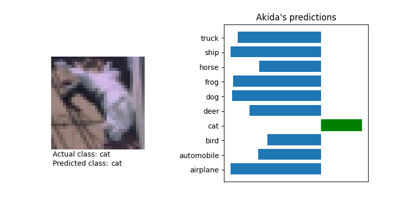

<!DOCTYPE html>
<!--[if IE 8]><html class="no-js lt-ie9" lang="en" > <![endif]-->
<!--[if gt IE 8]><!--> <html class="no-js" lang="en" > <!--<![endif]-->
<head>
  <meta charset="utf-8">
  
  <meta name="viewport" content="width=device-width, initial-scale=1.0">
  
  <title>VGG and DS-CNN/CIFAR10 inference &mdash; Akida Examples  documentation</title>
  

  
  
    <link rel="shortcut icon" href="../_static/favicon.ico"/>
  
  
  

  
  <script type="text/javascript" src="../_static/js/modernizr.min.js"></script>
  
    
      <script type="text/javascript" id="documentation_options" data-url_root="../" src="../_static/documentation_options.js"></script>
        <script type="text/javascript" src="../_static/jquery.js"></script>
        <script type="text/javascript" src="../_static/underscore.js"></script>
        <script type="text/javascript" src="../_static/doctools.js"></script>
        <script type="text/javascript" src="../_static/language_data.js"></script>
    
    <script type="text/javascript" src="../_static/js/theme.js"></script>

    

  
  <link rel="stylesheet" href="../_static/css/theme.css" type="text/css" />
  <link rel="stylesheet" href="../_static/pygments.css" type="text/css" />
  <link rel="stylesheet" href="../_static/gallery.css" type="text/css" />
    <link rel="index" title="Index" href="../genindex.html" />
    <link rel="search" title="Search" href="../search.html" />
    <link rel="next" title="Transfer learning with MobileNet for cats vs. dogs" href="plot_transfer_learning.html" />
    <link rel="prev" title="DS-CNN/KWS inference" href="plot_ds_cnn_kws.html" /> 
</head>

<body class="wy-body-for-nav">

   
  <div class="wy-grid-for-nav">
    
    <nav data-toggle="wy-nav-shift" class="wy-nav-side">
      <div class="wy-side-scroll">
        <div class="wy-side-nav-search"  style="background: #3f51b5" >
          

          
            <a href="../index.html">
          

          
            
            
          
          </a>

          
            
            
              <div class="version">
                Akida 1.8.2
              </div>
            
          

          
<div role="search">
  <form id="rtd-search-form" class="wy-form" action="../search.html" method="get">
    <input type="text" name="q" placeholder="Search docs" />
    <input type="hidden" name="check_keywords" value="yes" />
    <input type="hidden" name="area" value="default" />
  </form>
</div>

          
        </div>

        <div class="wy-menu wy-menu-vertical" data-spy="affix" role="navigation" aria-label="main navigation">
          
            
            
              
            
            
              <ul class="current">
<li class="toctree-l1"><a class="reference internal" href="../index.html">Overview</a></li>
<li class="toctree-l1"><a class="reference internal" href="../installation.html">Installation</a><ul>
<li class="toctree-l2"><a class="reference internal" href="../installation.html#requirements">Requirements</a></li>
<li class="toctree-l2"><a class="reference internal" href="../installation.html#quick-installation">Quick installation</a></li>
<li class="toctree-l2"><a class="reference internal" href="../installation.html#running-examples">Running examples</a></li>
</ul>
</li>
<li class="toctree-l1"><a class="reference internal" href="../user_guide/user_guide.html">User guide</a><ul>
<li class="toctree-l2"><a class="reference internal" href="../user_guide/getting_started.html">Getting started</a><ul>
<li class="toctree-l3"><a class="reference internal" href="../user_guide/getting_started.html#for-beginners">For beginners</a></li>
<li class="toctree-l3"><a class="reference internal" href="../user_guide/getting_started.html#for-users-familiar-with-deep-learning">For users familiar with deep-learning</a></li>
</ul>
</li>
<li class="toctree-l2"><a class="reference internal" href="../user_guide/aee.html">Akida user guide</a><ul>
<li class="toctree-l3"><a class="reference internal" href="../user_guide/aee.html#the-akida-execution-engine">The Akida Execution Engine</a><ul>
<li class="toctree-l4"><a class="reference internal" href="../user_guide/aee.html#id1">1. The Spiking Neural Network model</a></li>
<li class="toctree-l4"><a class="reference internal" href="../user_guide/aee.html#id2">2. Input data format</a></li>
<li class="toctree-l4"><a class="reference internal" href="../user_guide/aee.html#id3">3. Determine training mode</a></li>
<li class="toctree-l4"><a class="reference internal" href="../user_guide/aee.html#id4">4. Interpreting outputs</a></li>
</ul>
</li>
<li class="toctree-l3"><a class="reference internal" href="../user_guide/aee.html#neural-network-model">Neural Network model</a><ul>
<li class="toctree-l4"><a class="reference internal" href="../user_guide/aee.html#specifying-the-neural-network-model">Specifying the Neural Network model</a></li>
<li class="toctree-l4"><a class="reference internal" href="../user_guide/aee.html#saving-and-loading">Saving and loading</a></li>
<li class="toctree-l4"><a class="reference internal" href="../user_guide/aee.html#input-layer-types">Input layer types</a></li>
<li class="toctree-l4"><a class="reference internal" href="../user_guide/aee.html#data-processing-layer-types">Data-Processing layer types</a></li>
</ul>
</li>
<li class="toctree-l3"><a class="reference internal" href="../user_guide/aee.html#id5">Using Akida Unsupervised Learning</a><ul>
<li class="toctree-l4"><a class="reference internal" href="../user_guide/aee.html#learning-constraints">Learning constraints</a></li>
<li class="toctree-l4"><a class="reference internal" href="../user_guide/aee.html#compiling-a-layer">Compiling a layer</a></li>
<li class="toctree-l4"><a class="reference internal" href="../user_guide/aee.html#id7">Learning parameters</a></li>
</ul>
</li>
</ul>
</li>
<li class="toctree-l2"><a class="reference internal" href="../user_guide/cnn2snn.html">CNN2SNN toolkit</a><ul>
<li class="toctree-l3"><a class="reference internal" href="../user_guide/cnn2snn.html#overview">Overview</a><ul>
<li class="toctree-l4"><a class="reference internal" href="../user_guide/cnn2snn.html#conversion-workflow">Conversion Workflow</a></li>
<li class="toctree-l4"><a class="reference internal" href="../user_guide/cnn2snn.html#compatibility-constraints">Compatibility Constraints</a></li>
<li class="toctree-l4"><a class="reference internal" href="../user_guide/cnn2snn.html#typical-training-scenario">Typical training scenario</a></li>
</ul>
</li>
<li class="toctree-l3"><a class="reference internal" href="../user_guide/cnn2snn.html#layers-considerations">Layers Considerations</a><ul>
<li class="toctree-l4"><a class="reference internal" href="../user_guide/cnn2snn.html#supported-layer-types">Supported layer types</a></li>
<li class="toctree-l4"><a class="reference internal" href="../user_guide/cnn2snn.html#quantization-aware-layers">Quantization-aware layers</a></li>
<li class="toctree-l4"><a class="reference internal" href="../user_guide/cnn2snn.html#training-only-layers">Training-Only Layers</a></li>
<li class="toctree-l4"><a class="reference internal" href="../user_guide/cnn2snn.html#first-layers">First Layers</a></li>
<li class="toctree-l4"><a class="reference internal" href="../user_guide/cnn2snn.html#id6">Final Layers</a></li>
</ul>
</li>
<li class="toctree-l3"><a class="reference internal" href="../user_guide/cnn2snn.html#layer-blocks">Layer Blocks</a><ul>
<li class="toctree-l4"><a class="reference internal" href="../user_guide/cnn2snn.html#id7">Overview</a></li>
<li class="toctree-l4"><a class="reference internal" href="../user_guide/cnn2snn.html#conv-block"><code class="docutils literal notranslate"><span class="pre">conv_block</span></code></a></li>
<li class="toctree-l4"><a class="reference internal" href="../user_guide/cnn2snn.html#dense-block"><code class="docutils literal notranslate"><span class="pre">dense_block</span></code></a></li>
<li class="toctree-l4"><a class="reference internal" href="../user_guide/cnn2snn.html#separable-conv-block"><code class="docutils literal notranslate"><span class="pre">separable_conv_block</span></code></a></li>
</ul>
</li>
<li class="toctree-l3"><a class="reference internal" href="../user_guide/cnn2snn.html#tips-and-tricks">Tips and Tricks</a></li>
</ul>
</li>
<li class="toctree-l2"><a class="reference internal" href="../user_guide/hw_constraints.html">Hardware constraints</a><ul>
<li class="toctree-l3"><a class="reference internal" href="../user_guide/hw_constraints.html#input-layer">Input layer</a></li>
<li class="toctree-l3"><a class="reference internal" href="../user_guide/hw_constraints.html#data-processing-layers">Data-Processing layers</a><ul>
<li class="toctree-l4"><a class="reference internal" href="../user_guide/hw_constraints.html#convolutional-layer">Convolutional layer</a></li>
<li class="toctree-l4"><a class="reference internal" href="../user_guide/hw_constraints.html#fully-connected-layer">Fully connected layer</a></li>
</ul>
</li>
</ul>
</li>
</ul>
</li>
<li class="toctree-l1"><a class="reference internal" href="../api_reference/api_reference.html">API reference</a><ul>
<li class="toctree-l2"><a class="reference internal" href="../api_reference/aee_apis.html">Akida Execution Engine</a><ul>
<li class="toctree-l3"><a class="reference internal" href="../api_reference/aee_apis.html#model">Model</a></li>
<li class="toctree-l3"><a class="reference internal" href="../api_reference/aee_apis.html#layer">Layer</a></li>
<li class="toctree-l3"><a class="reference internal" href="../api_reference/aee_apis.html#layerstatistics">LayerStatistics</a></li>
<li class="toctree-l3"><a class="reference internal" href="../api_reference/aee_apis.html#observer">Observer</a></li>
<li class="toctree-l3"><a class="reference internal" href="../api_reference/aee_apis.html#inputdata">InputData</a></li>
<li class="toctree-l3"><a class="reference internal" href="../api_reference/aee_apis.html#inputconvolutional">InputConvolutional</a></li>
<li class="toctree-l3"><a class="reference internal" href="../api_reference/aee_apis.html#inputbcspike">InputBCSpike</a></li>
<li class="toctree-l3"><a class="reference internal" href="../api_reference/aee_apis.html#fullyconnected">FullyConnected</a></li>
<li class="toctree-l3"><a class="reference internal" href="../api_reference/aee_apis.html#convolutional">Convolutional</a></li>
<li class="toctree-l3"><a class="reference internal" href="../api_reference/aee_apis.html#separableconvolutional">SeparableConvolutional</a></li>
<li class="toctree-l3"><a class="reference internal" href="../api_reference/aee_apis.html#dense">Dense</a></li>
<li class="toctree-l3"><a class="reference internal" href="../api_reference/aee_apis.html#sparse">Sparse</a></li>
<li class="toctree-l3"><a class="reference internal" href="../api_reference/aee_apis.html#coords-to-sparse">coords_to_sparse</a></li>
<li class="toctree-l3"><a class="reference internal" href="../api_reference/aee_apis.html#dense-to-sparse">dense_to_sparse</a></li>
<li class="toctree-l3"><a class="reference internal" href="../api_reference/aee_apis.html#backendtype">BackendType</a></li>
<li class="toctree-l3"><a class="reference internal" href="../api_reference/aee_apis.html#convolutionmode">ConvolutionMode</a></li>
<li class="toctree-l3"><a class="reference internal" href="../api_reference/aee_apis.html#poolingtype">PoolingType</a></li>
<li class="toctree-l3"><a class="reference internal" href="../api_reference/aee_apis.html#learningtype">LearningType</a></li>
</ul>
</li>
<li class="toctree-l2"><a class="reference internal" href="../api_reference/cnn2snn_apis.html">CNN2SNN</a><ul>
<li class="toctree-l3"><a class="reference internal" href="../api_reference/cnn2snn_apis.html#convert">convert</a></li>
<li class="toctree-l3"><a class="reference internal" href="../api_reference/cnn2snn_apis.html#check-model-compatibility">check_model_compatibility</a></li>
<li class="toctree-l3"><a class="reference internal" href="../api_reference/cnn2snn_apis.html#weightquantizer">WeightQuantizer</a></li>
<li class="toctree-l3"><a class="reference internal" href="../api_reference/cnn2snn_apis.html#weightfloat">WeightFloat</a></li>
<li class="toctree-l3"><a class="reference internal" href="../api_reference/cnn2snn_apis.html#quantizedconv2d">QuantizedConv2D</a></li>
<li class="toctree-l3"><a class="reference internal" href="../api_reference/cnn2snn_apis.html#quantizeddepthwiseconv2d">QuantizedDepthwiseConv2D</a></li>
<li class="toctree-l3"><a class="reference internal" href="../api_reference/cnn2snn_apis.html#quantizeddense">QuantizedDense</a></li>
<li class="toctree-l3"><a class="reference internal" href="../api_reference/cnn2snn_apis.html#quantizedseparableconv2d">QuantizedSeparableConv2D</a></li>
<li class="toctree-l3"><a class="reference internal" href="../api_reference/cnn2snn_apis.html#activationdiscreterelu">ActivationDiscreteRelu</a></li>
</ul>
</li>
<li class="toctree-l2"><a class="reference internal" href="../api_reference/akida_models_apis.html">Akida models</a><ul>
<li class="toctree-l3"><a class="reference internal" href="../api_reference/akida_models_apis.html#quantization-blocks">Quantization blocks</a><ul>
<li class="toctree-l4"><a class="reference internal" href="../api_reference/akida_models_apis.html#conv-block">conv_block</a></li>
<li class="toctree-l4"><a class="reference internal" href="../api_reference/akida_models_apis.html#separable-conv-block">separable_conv_block</a></li>
<li class="toctree-l4"><a class="reference internal" href="../api_reference/akida_models_apis.html#dense-block">dense_block</a></li>
</ul>
</li>
<li class="toctree-l3"><a class="reference internal" href="../api_reference/akida_models_apis.html#model-zoo">Model zoo</a><ul>
<li class="toctree-l4"><a class="reference internal" href="../api_reference/akida_models_apis.html#mobilenet">Mobilenet</a></li>
<li class="toctree-l4"><a class="reference internal" href="../api_reference/akida_models_apis.html#ds-cnn">DS-CNN</a></li>
<li class="toctree-l4"><a class="reference internal" href="../api_reference/akida_models_apis.html#vgg">VGG</a></li>
</ul>
</li>
</ul>
</li>
</ul>
</li>
<li class="toctree-l1 current"><a class="reference internal" href="index.html">Examples</a><ul class="current">
<li class="toctree-l2"><a class="reference internal" href="plot_gxnor_mnist.html">GXNOR/MNIST inference</a><ul>
<li class="toctree-l3"><a class="reference internal" href="plot_gxnor_mnist.html#loading-the-mnist-dataset">1. Loading the MNIST dataset</a></li>
<li class="toctree-l3"><a class="reference internal" href="plot_gxnor_mnist.html#look-at-some-images-from-the-test-dataset">2. Look at some images from the test dataset</a></li>
<li class="toctree-l3"><a class="reference internal" href="plot_gxnor_mnist.html#load-the-pre-trained-akida-model">3. Load the pre-trained Akida model</a></li>
<li class="toctree-l3"><a class="reference internal" href="plot_gxnor_mnist.html#classify-a-single-image">4. Classify a single image</a></li>
<li class="toctree-l3"><a class="reference internal" href="plot_gxnor_mnist.html#check-performance-across-a-number-of-samples">5. Check performance across a number of samples</a></li>
</ul>
</li>
<li class="toctree-l2"><a class="reference internal" href="plot_regression.html">Regression tutorial</a><ul>
<li class="toctree-l3"><a class="reference internal" href="plot_regression.html#load-dependencies">1. Load dependencies</a></li>
<li class="toctree-l3"><a class="reference internal" href="plot_regression.html#load-the-dataset">2. Load the dataset</a></li>
<li class="toctree-l3"><a class="reference internal" href="plot_regression.html#create-a-keras-model-satisfying-akida-nsoc-requirements">3. Create a Keras model satisfying Akida NSoC requirements</a></li>
<li class="toctree-l3"><a class="reference internal" href="plot_regression.html#check-performance">4. Check performance</a></li>
<li class="toctree-l3"><a class="reference internal" href="plot_regression.html#conversion-to-akida">5. Conversion to Akida</a><ul>
<li class="toctree-l4"><a class="reference internal" href="plot_regression.html#convert-the-trained-keras-model-to-akida">5.1 Convert the trained Keras model to Akida</a></li>
<li class="toctree-l4"><a class="reference internal" href="plot_regression.html#check-akida-model-accuracy">5.2 Check Akida model accuracy</a></li>
</ul>
</li>
<li class="toctree-l3"><a class="reference internal" href="plot_regression.html#estimate-age-on-a-single-image">6. Estimate age on a single image</a></li>
</ul>
</li>
<li class="toctree-l2"><a class="reference internal" href="plot_ds_cnn_kws.html">DS-CNN/KWS inference</a><ul>
<li class="toctree-l3"><a class="reference internal" href="plot_ds_cnn_kws.html#load-cnn2snn-tool-dependencies">1. Load CNN2SNN tool dependencies</a></li>
<li class="toctree-l3"><a class="reference internal" href="plot_ds_cnn_kws.html#load-the-preprocessed-dataset">2. Load the preprocessed dataset</a></li>
<li class="toctree-l3"><a class="reference internal" href="plot_ds_cnn_kws.html#create-a-keras-model-satisfying-akida-nsoc-requirements">3. Create a Keras model satisfying Akida NSoC requirements</a></li>
<li class="toctree-l3"><a class="reference internal" href="plot_ds_cnn_kws.html#check-performance">4. Check performance</a></li>
<li class="toctree-l3"><a class="reference internal" href="plot_ds_cnn_kws.html#conversion-to-akida">5. Conversion to Akida</a><ul>
<li class="toctree-l4"><a class="reference internal" href="plot_ds_cnn_kws.html#convert-the-trained-keras-model-to-akida">5.1 Convert the trained Keras model to Akida</a></li>
<li class="toctree-l4"><a class="reference internal" href="plot_ds_cnn_kws.html#check-prediction-accuracy">5.2 Check prediction accuracy</a></li>
<li class="toctree-l4"><a class="reference internal" href="plot_ds_cnn_kws.html#confusion-matrix">5.3 Confusion matrix</a></li>
</ul>
</li>
</ul>
</li>
<li class="toctree-l2 current"><a class="current reference internal" href="#">VGG and DS-CNN/CIFAR10 inference</a><ul>
<li class="toctree-l3"><a class="reference internal" href="#load-cnn2snn-tool-dependencies">1. Load CNN2SNN tool dependencies</a></li>
<li class="toctree-l3"><a class="reference internal" href="#load-and-reshape-cifar10-dataset">2. Load and reshape CIFAR10 dataset</a></li>
<li class="toctree-l3"><a class="reference internal" href="#create-a-quantized-keras-vgg-model">3. Create a quantized Keras VGG model</a><ul>
<li class="toctree-l4"><a class="reference internal" href="#a-instantiate-keras-model">3.A Instantiate Keras model</a></li>
<li class="toctree-l4"><a class="reference internal" href="#b-check-performance">3.B Check performance</a></li>
</ul>
</li>
<li class="toctree-l3"><a class="reference internal" href="#conversion-to-akida">4. Conversion to Akida</a><ul>
<li class="toctree-l4"><a class="reference internal" href="#a-convert-to-akida-model">4.A Convert to Akida model</a></li>
<li class="toctree-l4"><a class="reference internal" href="#b-check-hardware-compliancy">4.B Check hardware compliancy</a></li>
<li class="toctree-l4"><a class="reference internal" href="#c-check-performance">4.C Check performance</a></li>
</ul>
</li>
<li class="toctree-l3"><a class="reference internal" href="#create-a-quantized-keras-ds-cnn-model">5. Create a quantized Keras DS-CNN model</a><ul>
<li class="toctree-l4"><a class="reference internal" href="#a-instantiate-keras-ds-cnn-model">5.A Instantiate Keras DS-CNN model</a></li>
<li class="toctree-l4"><a class="reference internal" href="#id1">5.B Check performance</a></li>
</ul>
</li>
<li class="toctree-l3"><a class="reference internal" href="#id2">6. Conversion to Akida</a><ul>
<li class="toctree-l4"><a class="reference internal" href="#id3">6.A Convert to Akida model</a></li>
<li class="toctree-l4"><a class="reference internal" href="#id4">6.B Check hardware compliancy</a></li>
<li class="toctree-l4"><a class="reference internal" href="#id5">6.C Check performance</a></li>
<li class="toctree-l4"><a class="reference internal" href="#d-show-predictions-for-a-random-image">6D. Show predictions for a random image</a></li>
</ul>
</li>
</ul>
</li>
<li class="toctree-l2"><a class="reference internal" href="plot_transfer_learning.html">Transfer learning with MobileNet for cats vs. dogs</a><ul>
<li class="toctree-l3"><a class="reference internal" href="plot_transfer_learning.html#transfer-learning-process">1. Transfer learning process</a></li>
<li class="toctree-l3"><a class="reference internal" href="plot_transfer_learning.html#load-and-preprocess-data">2. Load and preprocess data</a><ul>
<li class="toctree-l4"><a class="reference internal" href="plot_transfer_learning.html#a-load-and-split-data">2.A - Load and split data</a></li>
<li class="toctree-l4"><a class="reference internal" href="plot_transfer_learning.html#b-preprocess-the-test-set">2.B - Preprocess the test set</a></li>
<li class="toctree-l4"><a class="reference internal" href="plot_transfer_learning.html#c-get-labels">2.C - Get labels</a></li>
</ul>
</li>
<li class="toctree-l3"><a class="reference internal" href="plot_transfer_learning.html#convert-a-quantized-keras-model-to-akida">3. Convert a quantized Keras model to Akida</a><ul>
<li class="toctree-l4"><a class="reference internal" href="plot_transfer_learning.html#a-instantiate-a-keras-base-model">3.A - Instantiate a Keras base model</a></li>
<li class="toctree-l4"><a class="reference internal" href="plot_transfer_learning.html#b-modify-the-network-and-load-pre-trained-weights">3.B - Modify the network and load pre-trained weights</a></li>
<li class="toctree-l4"><a class="reference internal" href="plot_transfer_learning.html#c-convert-to-akida">3.C - Convert to Akida</a></li>
</ul>
</li>
<li class="toctree-l3"><a class="reference internal" href="plot_transfer_learning.html#classify-test-images">4. Classify test images</a><ul>
<li class="toctree-l4"><a class="reference internal" href="plot_transfer_learning.html#a-classify-test-images">4.A Classify test images</a></li>
<li class="toctree-l4"><a class="reference internal" href="plot_transfer_learning.html#b-compare-results">4.B Compare results</a></li>
</ul>
</li>
</ul>
</li>
<li class="toctree-l2"><a class="reference internal" href="plot_mobilenet_imagenet.html">MobileNet/ImageNet inference</a><ul>
<li class="toctree-l3"><a class="reference internal" href="plot_mobilenet_imagenet.html#load-cnn2snn-tool-dependencies">1. Load CNN2SNN tool dependencies</a></li>
<li class="toctree-l3"><a class="reference internal" href="plot_mobilenet_imagenet.html#load-test-images-from-imagenet">2. Load test images from ImageNet</a><ul>
<li class="toctree-l4"><a class="reference internal" href="plot_mobilenet_imagenet.html#load-test-images-and-preprocess-test-images">2.1 Load test images and preprocess test images</a></li>
<li class="toctree-l4"><a class="reference internal" href="plot_mobilenet_imagenet.html#load-labels">2.2 Load labels</a></li>
</ul>
</li>
<li class="toctree-l3"><a class="reference internal" href="plot_mobilenet_imagenet.html#create-a-quantized-keras-model">3. Create a quantized Keras model</a><ul>
<li class="toctree-l4"><a class="reference internal" href="plot_mobilenet_imagenet.html#instantiate-keras-model">3.1 Instantiate Keras model</a></li>
<li class="toctree-l4"><a class="reference internal" href="plot_mobilenet_imagenet.html#check-performance-of-the-keras-model">3.2 Check performance of the Keras model</a></li>
</ul>
</li>
<li class="toctree-l3"><a class="reference internal" href="plot_mobilenet_imagenet.html#convert-keras-model-for-akida-nsoc">4. Convert Keras model for Akida NSoC</a><ul>
<li class="toctree-l4"><a class="reference internal" href="plot_mobilenet_imagenet.html#convert-keras-model-to-an-akida-compatible-model">4.1 Convert Keras model to an Akida compatible model</a></li>
<li class="toctree-l4"><a class="reference internal" href="plot_mobilenet_imagenet.html#test-performance-of-the-akida-model">4.2 Test performance of the Akida model</a></li>
<li class="toctree-l4"><a class="reference internal" href="plot_mobilenet_imagenet.html#show-predictions-for-a-random-test-image">4.3 Show predictions for a random test image</a></li>
</ul>
</li>
</ul>
</li>
<li class="toctree-l2"><a class="reference internal" href="plot_cnn_flow.html">CNN conversion flow tutorial</a><ul>
<li class="toctree-l3"><a class="reference internal" href="plot_cnn_flow.html#system-configuration">1. System configuration</a><ul>
<li class="toctree-l4"><a class="reference internal" href="plot_cnn_flow.html#load-cnn2snn-tool-dependencies">1.1 Load CNN2SNN tool dependencies</a></li>
<li class="toctree-l4"><a class="reference internal" href="plot_cnn_flow.html#load-and-reshape-mnist-dataset">1.2 Load and reshape MNIST dataset</a></li>
<li class="toctree-l4"><a class="reference internal" href="plot_cnn_flow.html#set-training-parameters">1.3 Set training parameters</a></li>
</ul>
</li>
<li class="toctree-l3"><a class="reference internal" href="plot_cnn_flow.html#model-creation-and-performance-check">2. Model creation and performance check</a><ul>
<li class="toctree-l4"><a class="reference internal" href="plot_cnn_flow.html#model-creation">2.1 Model creation</a></li>
<li class="toctree-l4"><a class="reference internal" href="plot_cnn_flow.html#performance-check">2.2 Performance check</a></li>
</ul>
</li>
<li class="toctree-l3"><a class="reference internal" href="plot_cnn_flow.html#model-akida-compatibility-check-and-changes">3. Model Akida-compatibility check and changes</a><ul>
<li class="toctree-l4"><a class="reference internal" href="plot_cnn_flow.html#compatibility-check">3.1 Compatibility check</a></li>
<li class="toctree-l4"><a class="reference internal" href="plot_cnn_flow.html#model-adaptation">3.2 Model adaptation</a></li>
<li class="toctree-l4"><a class="reference internal" href="plot_cnn_flow.html#id1">3.3 Performance check</a></li>
</ul>
</li>
<li class="toctree-l3"><a class="reference internal" href="plot_cnn_flow.html#model-quantization-and-training">4. Model quantization and training</a><ul>
<li class="toctree-l4"><a class="reference internal" href="plot_cnn_flow.html#quantize-the-model">4.1 Quantize the model</a></li>
<li class="toctree-l4"><a class="reference internal" href="plot_cnn_flow.html#id2">4.2 Performance check</a></li>
</ul>
</li>
<li class="toctree-l3"><a class="reference internal" href="plot_cnn_flow.html#convert-trained-model-for-akida-and-test">5. Convert trained model for Akida and test</a><ul>
<li class="toctree-l4"><a class="reference internal" href="plot_cnn_flow.html#final-conversion">5.1 Final conversion</a></li>
<li class="toctree-l4"><a class="reference internal" href="plot_cnn_flow.html#performances-check-with-the-akida-execution-engine">5.2 Performances check with the Akida Execution Engine</a></li>
</ul>
</li>
</ul>
</li>
</ul>
</li>
<li class="toctree-l1"><a class="reference external" href="https://github.com/Brainchip-Inc/akida_examples/releases">Changelog</a></li>
<li class="toctree-l1"><a class="reference external" href="https://support.brainchip.com/portal/home">Support</a></li>
<li class="toctree-l1"><a class="reference internal" href="../license.html">License</a></li>
</ul>

            
          
        </div>
      </div>
    </nav>

    <section data-toggle="wy-nav-shift" class="wy-nav-content-wrap">

      
      <nav class="wy-nav-top" aria-label="top navigation">
        
          <i data-toggle="wy-nav-top" class="fa fa-bars"></i>
          <a href="../index.html">Akida Examples</a>
        
      </nav>


      <div class="wy-nav-content">
        
        <div class="rst-content">
        
          


<div role="navigation" aria-label="breadcrumbs navigation">

  <ul class="wy-breadcrumbs">
    
      <li><a href="../index.html">Docs</a> &raquo;</li>
        
          <li><a href="index.html">Akida examples</a> &raquo;</li>
        
      <li>VGG and DS-CNN/CIFAR10 inference</li>
    
    
      <li class="wy-breadcrumbs-aside">
        
            
        
      </li>
    
  </ul>

  
  <hr/>
</div>
          <div role="main" class="document" itemscope="itemscope" itemtype="http://schema.org/Article">
           <div itemprop="articleBody">
            
  <div class="sphx-glr-download-link-note admonition note">
<p class="admonition-title">Note</p>
<p>Click <a class="reference internal" href="#sphx-glr-download-examples-plot-vgg-ds-cnn-cifar10-py"><span class="std std-ref">here</span></a> to download the full example code</p>
</div>
<div class="sphx-glr-example-title section" id="vgg-and-ds-cnn-cifar10-inference">
<span id="sphx-glr-examples-plot-vgg-ds-cnn-cifar10-py"></span><h1>VGG and DS-CNN/CIFAR10 inference<a class="headerlink" href="#vgg-and-ds-cnn-cifar10-inference" title="Permalink to this headline">¶</a></h1>
<p>The CIFAR-10 dataset consists of 60000 32x32 color images in 10 classes,
with 6000 images per class. There are 50000 training images and 10000
test images.</p>
<p>This tutorial uses this dataset for a classic object classification task
(airplane, automobile, bird, cat, deer, dog, frog, horse, ship, truck).</p>
<p>We start from state-of-the-art CNN models, illustrating how these models
can be quantized, then converted to an Akida model with an equivalent
accuracy.</p>
<p>The neural networks used in this tutorial are inspired from the
<a class="reference external" href="https://arxiv.org/abs/1409.1556">VGG</a> and
<a class="reference external" href="https://arxiv.org/abs/1704.04861">MobileNets</a> architecture
respectively.</p>
<p>The VGG architecture uses Convolutional and Dense layers: these layers
must therefore be quantized with at most 2 bits of precision to be
compatible with the Akida NSoC. This causes a 2 % drop in accuracy.</p>
<p>The DS-CNN architecture uses Separable Convolutional layers that can
be quantized using 4 bits of precision, allowing to preserve the base
Keras model accuracy.</p>
<table class="docutils align-default">
<colgroup>
<col style="width: 68%" />
<col style="width: 33%" />
</colgroup>
<thead>
<tr class="row-odd"><th class="head"><p>Model</p></th>
<th class="head"><p>Accuracy</p></th>
</tr>
</thead>
<tbody>
<tr class="row-even"><td><p>VGG Keras</p></td>
<td><p>93.23 %</p></td>
</tr>
<tr class="row-odd"><td><p>VGG Keras quantized</p></td>
<td><p>90.59 %</p></td>
</tr>
<tr class="row-even"><td><p>VGG Akida</p></td>
<td><p><strong>90.67 %</strong></p></td>
</tr>
<tr class="row-odd"><td><p>DS-CNN Keras</p></td>
<td><p>93.49 %</p></td>
</tr>
<tr class="row-even"><td><p>DS-CNN Keras quantized</p></td>
<td><p>93.07 %</p></td>
</tr>
<tr class="row-odd"><td><p>DS-CNN Akida</p></td>
<td><p><strong>93.22 %</strong></p></td>
</tr>
</tbody>
</table>
<div class="section" id="load-cnn2snn-tool-dependencies">
<h2>1. Load CNN2SNN tool dependencies<a class="headerlink" href="#load-cnn2snn-tool-dependencies" title="Permalink to this headline">¶</a></h2>
<div class="highlight-default notranslate"><div class="highlight"><pre><span></span><span class="c1"># System imports</span>
<span class="kn">import</span> <span class="nn">os</span>
<span class="kn">import</span> <span class="nn">sys</span>
<span class="kn">import</span> <span class="nn">numpy</span> <span class="k">as</span> <span class="nn">np</span>
<span class="kn">from</span> <span class="nn">sklearn.metrics</span> <span class="kn">import</span> <span class="n">accuracy_score</span>
<span class="kn">from</span> <span class="nn">timeit</span> <span class="kn">import</span> <span class="n">default_timer</span> <span class="k">as</span> <span class="n">timer</span>

<span class="c1"># TensorFlow imports</span>
<span class="kn">from</span> <span class="nn">tensorflow.keras.datasets</span> <span class="kn">import</span> <span class="n">cifar10</span>

<span class="c1"># Akida models imports</span>
<span class="kn">from</span> <span class="nn">akida_models</span> <span class="kn">import</span> <span class="n">ds_cnn_cifar10</span><span class="p">,</span> <span class="n">vgg_cifar10</span>

<span class="c1"># CNN2SNN</span>
<span class="kn">from</span> <span class="nn">cnn2snn</span> <span class="kn">import</span> <span class="n">convert</span>
</pre></div>
</div>
</div>
<div class="section" id="load-and-reshape-cifar10-dataset">
<h2>2. Load and reshape CIFAR10 dataset<a class="headerlink" href="#load-and-reshape-cifar10-dataset" title="Permalink to this headline">¶</a></h2>
<div class="highlight-default notranslate"><div class="highlight"><pre><span></span><span class="c1"># Load CIFAR10 dataset</span>
<span class="p">(</span><span class="n">x_train</span><span class="p">,</span> <span class="n">y_train</span><span class="p">),</span> <span class="p">(</span><span class="n">x_test</span><span class="p">,</span> <span class="n">y_test</span><span class="p">)</span> <span class="o">=</span> <span class="n">cifar10</span><span class="o">.</span><span class="n">load_data</span><span class="p">()</span>

<span class="c1"># Reshape x-data</span>
<span class="n">x_train</span> <span class="o">=</span> <span class="n">x_train</span><span class="o">.</span><span class="n">reshape</span><span class="p">(</span><span class="mi">50000</span><span class="p">,</span> <span class="mi">32</span><span class="p">,</span> <span class="mi">32</span><span class="p">,</span> <span class="mi">3</span><span class="p">)</span>
<span class="n">x_test</span> <span class="o">=</span> <span class="n">x_test</span><span class="o">.</span><span class="n">reshape</span><span class="p">(</span><span class="mi">10000</span><span class="p">,</span> <span class="mi">32</span><span class="p">,</span> <span class="mi">32</span><span class="p">,</span> <span class="mi">3</span><span class="p">)</span>
<span class="n">input_shape</span> <span class="o">=</span> <span class="p">(</span><span class="mi">32</span><span class="p">,</span> <span class="mi">32</span><span class="p">,</span> <span class="mi">3</span><span class="p">)</span>

<span class="c1"># Set aside raw test data for use with Akida Execution Engine later</span>
<span class="n">raw_x_test</span> <span class="o">=</span> <span class="n">x_test</span><span class="o">.</span><span class="n">astype</span><span class="p">(</span><span class="s1">&#39;uint8&#39;</span><span class="p">)</span>

<span class="c1"># Rescale x-data</span>
<span class="n">a</span> <span class="o">=</span> <span class="mi">255</span>
<span class="n">b</span> <span class="o">=</span> <span class="mi">0</span>
<span class="n">input_scaling</span> <span class="o">=</span> <span class="p">(</span><span class="n">a</span><span class="p">,</span> <span class="n">b</span><span class="p">)</span>
<span class="n">x_train</span> <span class="o">=</span> <span class="n">x_train</span><span class="o">.</span><span class="n">astype</span><span class="p">(</span><span class="s1">&#39;float32&#39;</span><span class="p">)</span>
<span class="n">x_test</span> <span class="o">=</span> <span class="n">x_test</span><span class="o">.</span><span class="n">astype</span><span class="p">(</span><span class="s1">&#39;float32&#39;</span><span class="p">)</span>
<span class="n">x_train</span> <span class="o">=</span> <span class="p">(</span><span class="n">x_train</span> <span class="o">-</span> <span class="n">b</span><span class="p">)</span> <span class="o">/</span> <span class="n">a</span>
<span class="n">x_test</span> <span class="o">=</span> <span class="p">(</span><span class="n">x_test</span> <span class="o">-</span> <span class="n">b</span><span class="p">)</span> <span class="o">/</span> <span class="n">a</span>
</pre></div>
</div>
<p class="sphx-glr-script-out">Out:</p>
<div class="sphx-glr-script-out highlight-none notranslate"><div class="highlight"><pre><span></span>Downloading data from https://www.cs.toronto.edu/~kriz/cifar-10-python.tar.gz

     8192/170498071 [..............................] - ETA: 34:17
    40960/170498071 [..............................] - ETA: 13:46
    90112/170498071 [..............................] - ETA: 9:23 
   204800/170498071 [..............................] - ETA: 5:31
   417792/170498071 [..............................] - ETA: 3:22
   860160/170498071 [..............................] - ETA: 1:57
  1302528/170498071 [..............................] - ETA: 1:35
  2514944/170498071 [..............................] - ETA: 54s 
  3760128/170498071 [..............................] - ETA: 39s
  4775936/170498071 [..............................] - ETA: 34s
  5758976/170498071 [&gt;.............................] - ETA: 29s
  5832704/170498071 [&gt;.............................] - ETA: 30s
  6758400/170498071 [&gt;.............................] - ETA: 27s
  6889472/170498071 [&gt;.............................] - ETA: 28s
  7806976/170498071 [&gt;.............................] - ETA: 26s
  7954432/170498071 [&gt;.............................] - ETA: 26s
  8904704/170498071 [&gt;.............................] - ETA: 24s
  9043968/170498071 [&gt;.............................] - ETA: 24s
  9986048/170498071 [&gt;.............................] - ETA: 23s
 10133504/170498071 [&gt;.............................] - ETA: 23s
 11100160/170498071 [&gt;.............................] - ETA: 22s
 11993088/170498071 [=&gt;............................] - ETA: 21s
 12214272/170498071 [=&gt;............................] - ETA: 21s
 13131776/170498071 [=&gt;............................] - ETA: 20s
 13328384/170498071 [=&gt;............................] - ETA: 21s
 14262272/170498071 [=&gt;............................] - ETA: 20s
 14475264/170498071 [=&gt;............................] - ETA: 20s
 15392768/170498071 [=&gt;............................] - ETA: 19s
 15638528/170498071 [=&gt;............................] - ETA: 19s
 16539648/170498071 [=&gt;............................] - ETA: 19s
 16801792/170498071 [=&gt;............................] - ETA: 19s
 17719296/170498071 [==&gt;...........................] - ETA: 18s
 17965056/170498071 [==&gt;...........................] - ETA: 18s
 18915328/170498071 [==&gt;...........................] - ETA: 18s
 19161088/170498071 [==&gt;...........................] - ETA: 18s
 19898368/170498071 [==&gt;...........................] - ETA: 17s
 20357120/170498071 [==&gt;...........................] - ETA: 17s
 21102592/170498071 [==&gt;...........................] - ETA: 17s
 21528576/170498071 [==&gt;...........................] - ETA: 17s
 22306816/170498071 [==&gt;...........................] - ETA: 16s
 22749184/170498071 [===&gt;..........................] - ETA: 16s
 23552000/170498071 [===&gt;..........................] - ETA: 16s
 23879680/170498071 [===&gt;..........................] - ETA: 16s
 24780800/170498071 [===&gt;..........................] - ETA: 16s
 25124864/170498071 [===&gt;..........................] - ETA: 16s
 26025984/170498071 [===&gt;..........................] - ETA: 15s
 26370048/170498071 [===&gt;..........................] - ETA: 15s
 27336704/170498071 [===&gt;..........................] - ETA: 15s
 27664384/170498071 [===&gt;..........................] - ETA: 15s
 28401664/170498071 [===&gt;..........................] - ETA: 15s
 28925952/170498071 [====&gt;.........................] - ETA: 15s
 29663232/170498071 [====&gt;.........................] - ETA: 14s
 30187520/170498071 [====&gt;.........................] - ETA: 14s
 30990336/170498071 [====&gt;.........................] - ETA: 14s
 31465472/170498071 [====&gt;.........................] - ETA: 14s
 32317440/170498071 [====&gt;.........................] - ETA: 14s
 32759808/170498071 [====&gt;.........................] - ETA: 14s
 33660928/170498071 [====&gt;.........................] - ETA: 14s
 34045952/170498071 [====&gt;.........................] - ETA: 14s
 34807808/170498071 [=====&gt;........................] - ETA: 13s
 35332096/170498071 [=====&gt;........................] - ETA: 13s
 36110336/170498071 [=====&gt;........................] - ETA: 13s
 36626432/170498071 [=====&gt;........................] - ETA: 13s
 37396480/170498071 [=====&gt;........................] - ETA: 13s
 37969920/170498071 [=====&gt;........................] - ETA: 13s
 38707200/170498071 [=====&gt;........................] - ETA: 13s
 39231488/170498071 [=====&gt;........................] - ETA: 13s
 40067072/170498071 [======&gt;.......................] - ETA: 12s
 40574976/170498071 [======&gt;.......................] - ETA: 12s
 41410560/170498071 [======&gt;.......................] - ETA: 12s
 41902080/170498071 [======&gt;.......................] - ETA: 12s
 42737664/170498071 [======&gt;.......................] - ETA: 12s
 43245568/170498071 [======&gt;.......................] - ETA: 12s
 44064768/170498071 [======&gt;.......................] - ETA: 12s
 44630016/170498071 [======&gt;.......................] - ETA: 12s
 45408256/170498071 [======&gt;.......................] - ETA: 12s
 45965312/170498071 [=======&gt;......................] - ETA: 11s
 46768128/170498071 [=======&gt;......................] - ETA: 11s
 47407104/170498071 [=======&gt;......................] - ETA: 11s
 48177152/170498071 [=======&gt;......................] - ETA: 11s
 48963584/170498071 [=======&gt;......................] - ETA: 11s
 49537024/170498071 [=======&gt;......................] - ETA: 11s
 50356224/170498071 [=======&gt;......................] - ETA: 11s
 50896896/170498071 [=======&gt;......................] - ETA: 11s
 51748864/170498071 [========&gt;.....................] - ETA: 11s
 52305920/170498071 [========&gt;.....................] - ETA: 11s
 53125120/170498071 [========&gt;.....................] - ETA: 10s
 53731328/170498071 [========&gt;.....................] - ETA: 10s
 54517760/170498071 [========&gt;.....................] - ETA: 10s
 55156736/170498071 [========&gt;.....................] - ETA: 10s
 55910400/170498071 [========&gt;.....................] - ETA: 10s
 56549376/170498071 [========&gt;.....................] - ETA: 10s
 57303040/170498071 [=========&gt;....................] - ETA: 10s
 57843712/170498071 [=========&gt;....................] - ETA: 10s
 58695680/170498071 [=========&gt;....................] - ETA: 10s
 59252736/170498071 [=========&gt;....................] - ETA: 10s
 60088320/170498071 [=========&gt;....................] - ETA: 10s
 60645376/170498071 [=========&gt;....................] - ETA: 9s 
 61513728/170498071 [=========&gt;....................] - ETA: 9s
 62103552/170498071 [=========&gt;....................] - ETA: 9s
 62922752/170498071 [==========&gt;...................] - ETA: 9s
 63512576/170498071 [==========&gt;...................] - ETA: 9s
 64331776/170498071 [==========&gt;...................] - ETA: 9s
 64954368/170498071 [==========&gt;...................] - ETA: 9s
 65748992/170498071 [==========&gt;...................] - ETA: 9s
 66371584/170498071 [==========&gt;...................] - ETA: 9s
 67149824/170498071 [==========&gt;...................] - ETA: 9s
 67772416/170498071 [==========&gt;...................] - ETA: 9s
 68591616/170498071 [===========&gt;..................] - ETA: 8s
 69214208/170498071 [===========&gt;..................] - ETA: 8s
 70017024/170498071 [===========&gt;..................] - ETA: 8s
 70656000/170498071 [===========&gt;..................] - ETA: 8s
 71491584/170498071 [===========&gt;..................] - ETA: 8s
 72081408/170498071 [===========&gt;..................] - ETA: 8s
 72900608/170498071 [===========&gt;..................] - ETA: 8s
 73555968/170498071 [===========&gt;..................] - ETA: 8s
 74342400/170498071 [============&gt;.................] - ETA: 8s
 74981376/170498071 [============&gt;.................] - ETA: 8s
 75800576/170498071 [============&gt;.................] - ETA: 8s
 76439552/170498071 [============&gt;.................] - ETA: 8s
 77275136/170498071 [============&gt;.................] - ETA: 8s
 77881344/170498071 [============&gt;.................] - ETA: 7s
 78716928/170498071 [============&gt;.................] - ETA: 7s
 79372288/170498071 [============&gt;.................] - ETA: 7s
 80175104/170498071 [=============&gt;................] - ETA: 7s
 80928768/170498071 [=============&gt;................] - ETA: 7s
 81649664/170498071 [=============&gt;................] - ETA: 7s
 82370560/170498071 [=============&gt;................] - ETA: 7s
 83091456/170498071 [=============&gt;................] - ETA: 7s
 83828736/170498071 [=============&gt;................] - ETA: 7s
 84533248/170498071 [=============&gt;................] - ETA: 7s
 85295104/170498071 [==============&gt;...............] - ETA: 7s
 85975040/170498071 [==============&gt;...............] - ETA: 7s
 86736896/170498071 [==============&gt;...............] - ETA: 7s
 87416832/170498071 [==============&gt;...............] - ETA: 7s
 88170496/170498071 [==============&gt;...............] - ETA: 6s
 88875008/170498071 [==============&gt;...............] - ETA: 6s
 89661440/170498071 [==============&gt;...............] - ETA: 6s
 90300416/170498071 [==============&gt;...............] - ETA: 6s
 91119616/170498071 [===============&gt;..............] - ETA: 6s
 91742208/170498071 [===============&gt;..............] - ETA: 6s
 92577792/170498071 [===============&gt;..............] - ETA: 6s
 93184000/170498071 [===============&gt;..............] - ETA: 6s
 94019584/170498071 [===============&gt;..............] - ETA: 6s
 94724096/170498071 [===============&gt;..............] - ETA: 6s
 95543296/170498071 [===============&gt;..............] - ETA: 6s
 96182272/170498071 [===============&gt;..............] - ETA: 6s
 97001472/170498071 [================&gt;.............] - ETA: 6s
 97640448/170498071 [================&gt;.............] - ETA: 6s
 98492416/170498071 [================&gt;.............] - ETA: 5s
 99131392/170498071 [================&gt;.............] - ETA: 5s
 99950592/170498071 [================&gt;.............] - ETA: 5s
100589568/170498071 [================&gt;.............] - ETA: 5s
101425152/170498071 [================&gt;.............] - ETA: 5s
102080512/170498071 [================&gt;.............] - ETA: 5s
102866944/170498071 [=================&gt;............] - ETA: 5s
103489536/170498071 [=================&gt;............] - ETA: 5s
103505920/170498071 [=================&gt;............] - ETA: 5s
103702528/170498071 [=================&gt;............] - ETA: 5s
104128512/170498071 [=================&gt;............] - ETA: 5s
106471424/170498071 [=================&gt;............] - ETA: 5s
106668032/170498071 [=================&gt;............] - ETA: 5s
106700800/170498071 [=================&gt;............] - ETA: 5s
107651072/170498071 [=================&gt;............] - ETA: 5s
107913216/170498071 [=================&gt;............] - ETA: 5s
108388352/170498071 [==================&gt;...........] - ETA: 5s
108634112/170498071 [==================&gt;...........] - ETA: 5s
108716032/170498071 [==================&gt;...........] - ETA: 5s
109142016/170498071 [==================&gt;...........] - ETA: 5s
109289472/170498071 [==================&gt;...........] - ETA: 5s
109355008/170498071 [==================&gt;...........] - ETA: 5s
109453312/170498071 [==================&gt;...........] - ETA: 5s
109502464/170498071 [==================&gt;...........] - ETA: 5s
109641728/170498071 [==================&gt;...........] - ETA: 5s
109764608/170498071 [==================&gt;...........] - ETA: 5s
109846528/170498071 [==================&gt;...........] - ETA: 5s
109895680/170498071 [==================&gt;...........] - ETA: 5s
109961216/170498071 [==================&gt;...........] - ETA: 5s
110043136/170498071 [==================&gt;...........] - ETA: 5s
110108672/170498071 [==================&gt;...........] - ETA: 5s
110157824/170498071 [==================&gt;...........] - ETA: 5s
110190592/170498071 [==================&gt;...........] - ETA: 5s
110206976/170498071 [==================&gt;...........] - ETA: 6s
110288896/170498071 [==================&gt;...........] - ETA: 6s
110370816/170498071 [==================&gt;...........] - ETA: 6s
110419968/170498071 [==================&gt;...........] - ETA: 6s
110452736/170498071 [==================&gt;...........] - ETA: 6s
110469120/170498071 [==================&gt;...........] - ETA: 6s
110485504/170498071 [==================&gt;...........] - ETA: 6s
110501888/170498071 [==================&gt;...........] - ETA: 6s
110518272/170498071 [==================&gt;...........] - ETA: 6s
110534656/170498071 [==================&gt;...........] - ETA: 6s
110551040/170498071 [==================&gt;...........] - ETA: 7s
110567424/170498071 [==================&gt;...........] - ETA: 7s
110583808/170498071 [==================&gt;...........] - ETA: 7s
110600192/170498071 [==================&gt;...........] - ETA: 7s
110616576/170498071 [==================&gt;...........] - ETA: 7s
110632960/170498071 [==================&gt;...........] - ETA: 7s
110649344/170498071 [==================&gt;...........] - ETA: 7s
110665728/170498071 [==================&gt;...........] - ETA: 7s
110682112/170498071 [==================&gt;...........] - ETA: 7s
110698496/170498071 [==================&gt;...........] - ETA: 7s
110714880/170498071 [==================&gt;...........] - ETA: 7s
110731264/170498071 [==================&gt;...........] - ETA: 7s
110747648/170498071 [==================&gt;...........] - ETA: 7s
110780416/170498071 [==================&gt;...........] - ETA: 7s
110796800/170498071 [==================&gt;...........] - ETA: 7s
110813184/170498071 [==================&gt;...........] - ETA: 7s
110829568/170498071 [==================&gt;...........] - ETA: 7s
110845952/170498071 [==================&gt;...........] - ETA: 7s
110862336/170498071 [==================&gt;...........] - ETA: 7s
110895104/170498071 [==================&gt;...........] - ETA: 8s
110927872/170498071 [==================&gt;...........] - ETA: 8s
110944256/170498071 [==================&gt;...........] - ETA: 8s
110977024/170498071 [==================&gt;...........] - ETA: 8s
110993408/170498071 [==================&gt;...........] - ETA: 8s
111026176/170498071 [==================&gt;...........] - ETA: 8s
111058944/170498071 [==================&gt;...........] - ETA: 8s
111075328/170498071 [==================&gt;...........] - ETA: 8s
111108096/170498071 [==================&gt;...........] - ETA: 8s
111140864/170498071 [==================&gt;...........] - ETA: 8s
111157248/170498071 [==================&gt;...........] - ETA: 8s
111190016/170498071 [==================&gt;...........] - ETA: 8s
111206400/170498071 [==================&gt;...........] - ETA: 8s
111222784/170498071 [==================&gt;...........] - ETA: 8s
111239168/170498071 [==================&gt;...........] - ETA: 8s
111263744/170498071 [==================&gt;...........] - ETA: 8s
111271936/170498071 [==================&gt;...........] - ETA: 8s
111304704/170498071 [==================&gt;...........] - ETA: 8s
111337472/170498071 [==================&gt;...........] - ETA: 8s
111370240/170498071 [==================&gt;...........] - ETA: 8s
111403008/170498071 [==================&gt;...........] - ETA: 8s
111435776/170498071 [==================&gt;...........] - ETA: 8s
111468544/170498071 [==================&gt;...........] - ETA: 8s
111501312/170498071 [==================&gt;...........] - ETA: 8s
111517696/170498071 [==================&gt;...........] - ETA: 9s
111550464/170498071 [==================&gt;...........] - ETA: 9s
111583232/170498071 [==================&gt;...........] - ETA: 9s
111616000/170498071 [==================&gt;...........] - ETA: 9s
111632384/170498071 [==================&gt;...........] - ETA: 9s
111665152/170498071 [==================&gt;...........] - ETA: 9s
111697920/170498071 [==================&gt;...........] - ETA: 9s
111714304/170498071 [==================&gt;...........] - ETA: 9s
111747072/170498071 [==================&gt;...........] - ETA: 9s
111779840/170498071 [==================&gt;...........] - ETA: 9s
111812608/170498071 [==================&gt;...........] - ETA: 9s
111828992/170498071 [==================&gt;...........] - ETA: 9s
111861760/170498071 [==================&gt;...........] - ETA: 9s
111894528/170498071 [==================&gt;...........] - ETA: 9s
111910912/170498071 [==================&gt;...........] - ETA: 9s
111943680/170498071 [==================&gt;...........] - ETA: 9s
111976448/170498071 [==================&gt;...........] - ETA: 9s
112025600/170498071 [==================&gt;...........] - ETA: 9s
112058368/170498071 [==================&gt;...........] - ETA: 9s
112091136/170498071 [==================&gt;...........] - ETA: 9s
112140288/170498071 [==================&gt;...........] - ETA: 9s
112173056/170498071 [==================&gt;...........] - ETA: 9s
112222208/170498071 [==================&gt;...........] - ETA: 9s
112271360/170498071 [==================&gt;...........] - ETA: 9s
112304128/170498071 [==================&gt;...........] - ETA: 9s
112353280/170498071 [==================&gt;...........] - ETA: 9s
112418816/170498071 [==================&gt;...........] - ETA: 9s
112467968/170498071 [==================&gt;...........] - ETA: 9s
112517120/170498071 [==================&gt;...........] - ETA: 9s
112582656/170498071 [==================&gt;...........] - ETA: 9s
112631808/170498071 [==================&gt;...........] - ETA: 9s
112680960/170498071 [==================&gt;...........] - ETA: 9s
112762880/170498071 [==================&gt;...........] - ETA: 9s
112828416/170498071 [==================&gt;...........] - ETA: 9s
112877568/170498071 [==================&gt;...........] - ETA: 9s
112959488/170498071 [==================&gt;...........] - ETA: 9s
113025024/170498071 [==================&gt;...........] - ETA: 9s
113090560/170498071 [==================&gt;...........] - ETA: 9s
113188864/170498071 [==================&gt;...........] - ETA: 9s
113254400/170498071 [==================&gt;...........] - ETA: 9s
113319936/170498071 [==================&gt;...........] - ETA: 9s
113434624/170498071 [==================&gt;...........] - ETA: 9s
113500160/170498071 [==================&gt;...........] - ETA: 9s
113582080/170498071 [==================&gt;...........] - ETA: 9s
113696768/170498071 [===================&gt;..........] - ETA: 9s
113778688/170498071 [===================&gt;..........] - ETA: 9s
113860608/170498071 [===================&gt;..........] - ETA: 10s
113991680/170498071 [===================&gt;..........] - ETA: 9s 
114089984/170498071 [===================&gt;..........] - ETA: 10s
114171904/170498071 [===================&gt;..........] - ETA: 10s
114319360/170498071 [===================&gt;..........] - ETA: 10s
114417664/170498071 [===================&gt;..........] - ETA: 10s
114499584/170498071 [===================&gt;..........] - ETA: 10s
114663424/170498071 [===================&gt;..........] - ETA: 10s
114778112/170498071 [===================&gt;..........] - ETA: 10s
114876416/170498071 [===================&gt;..........] - ETA: 10s
115056640/170498071 [===================&gt;..........] - ETA: 10s
115171328/170498071 [===================&gt;..........] - ETA: 10s
115269632/170498071 [===================&gt;..........] - ETA: 10s
115466240/170498071 [===================&gt;..........] - ETA: 9s 
115597312/170498071 [===================&gt;..........] - ETA: 9s
115712000/170498071 [===================&gt;..........] - ETA: 9s
115908608/170498071 [===================&gt;..........] - ETA: 9s
116056064/170498071 [===================&gt;..........] - ETA: 9s
116170752/170498071 [===================&gt;..........] - ETA: 9s
116400128/170498071 [===================&gt;..........] - ETA: 9s
116547584/170498071 [===================&gt;..........] - ETA: 9s
116678656/170498071 [===================&gt;..........] - ETA: 9s
116924416/170498071 [===================&gt;..........] - ETA: 9s
117088256/170498071 [===================&gt;..........] - ETA: 9s
117219328/170498071 [===================&gt;..........] - ETA: 9s
117481472/170498071 [===================&gt;..........] - ETA: 9s
117661696/170498071 [===================&gt;..........] - ETA: 9s
117809152/170498071 [===================&gt;..........] - ETA: 9s
118087680/170498071 [===================&gt;..........] - ETA: 9s
118267904/170498071 [===================&gt;..........] - ETA: 9s
118431744/170498071 [===================&gt;..........] - ETA: 9s
118743040/170498071 [===================&gt;..........] - ETA: 9s
118939648/170498071 [===================&gt;..........] - ETA: 9s
119119872/170498071 [===================&gt;..........] - ETA: 9s
119431168/170498071 [====================&gt;.........] - ETA: 9s
119644160/170498071 [====================&gt;.........] - ETA: 9s
119824384/170498071 [====================&gt;.........] - ETA: 9s
120184832/170498071 [====================&gt;.........] - ETA: 9s
120397824/170498071 [====================&gt;.........] - ETA: 9s
120610816/170498071 [====================&gt;.........] - ETA: 9s
120971264/170498071 [====================&gt;.........] - ETA: 9s
121200640/170498071 [====================&gt;.........] - ETA: 9s
121430016/170498071 [====================&gt;.........] - ETA: 9s
121823232/170498071 [====================&gt;.........] - ETA: 9s
122068992/170498071 [====================&gt;.........] - ETA: 9s
122314752/170498071 [====================&gt;.........] - ETA: 9s
122724352/170498071 [====================&gt;.........] - ETA: 9s
122986496/170498071 [====================&gt;.........] - ETA: 8s
123248640/170498071 [====================&gt;.........] - ETA: 8s
123691008/170498071 [====================&gt;.........] - ETA: 8s
123969536/170498071 [====================&gt;.........] - ETA: 8s
124248064/170498071 [====================&gt;.........] - ETA: 8s
124706816/170498071 [====================&gt;.........] - ETA: 8s
125018112/170498071 [====================&gt;.........] - ETA: 8s
125296640/170498071 [=====================&gt;........] - ETA: 8s
125771776/170498071 [=====================&gt;........] - ETA: 8s
125870080/170498071 [=====================&gt;........] - ETA: 8s
126361600/170498071 [=====================&gt;........] - ETA: 8s
126705664/170498071 [=====================&gt;........] - ETA: 8s
127000576/170498071 [=====================&gt;........] - ETA: 8s
127410176/170498071 [=====================&gt;........] - ETA: 8s
127623168/170498071 [=====================&gt;........] - ETA: 8s
128098304/170498071 [=====================&gt;........] - ETA: 7s
128262144/170498071 [=====================&gt;........] - ETA: 7s
128753664/170498071 [=====================&gt;........] - ETA: 7s
128901120/170498071 [=====================&gt;........] - ETA: 7s
129441792/170498071 [=====================&gt;........] - ETA: 7s
129572864/170498071 [=====================&gt;........] - ETA: 7s
130129920/170498071 [=====================&gt;........] - ETA: 7s
130539520/170498071 [=====================&gt;........] - ETA: 7s
130883584/170498071 [======================&gt;.......] - ETA: 7s
131375104/170498071 [======================&gt;.......] - ETA: 7s
131620864/170498071 [======================&gt;.......] - ETA: 7s
132096000/170498071 [======================&gt;.......] - ETA: 7s
132374528/170498071 [======================&gt;.......] - ETA: 7s
132882432/170498071 [======================&gt;.......] - ETA: 7s
133144576/170498071 [======================&gt;.......] - ETA: 6s
133718016/170498071 [======================&gt;.......] - ETA: 6s
133980160/170498071 [======================&gt;.......] - ETA: 6s
134520832/170498071 [======================&gt;.......] - ETA: 6s
134782976/170498071 [======================&gt;.......] - ETA: 6s
135372800/170498071 [======================&gt;.......] - ETA: 6s
135847936/170498071 [======================&gt;.......] - ETA: 6s
136290304/170498071 [======================&gt;.......] - ETA: 6s
136880128/170498071 [=======================&gt;......] - ETA: 6s
137191424/170498071 [=======================&gt;......] - ETA: 6s
137764864/170498071 [=======================&gt;......] - ETA: 6s
138108928/170498071 [=======================&gt;......] - ETA: 5s
138739712/170498071 [=======================&gt;......] - ETA: 5s
139010048/170498071 [=======================&gt;......] - ETA: 5s
139649024/170498071 [=======================&gt;......] - ETA: 5s
139943936/170498071 [=======================&gt;......] - ETA: 5s
140607488/170498071 [=======================&gt;......] - ETA: 5s
140894208/170498071 [=======================&gt;......] - ETA: 5s
141631488/170498071 [=======================&gt;......] - ETA: 5s
141877248/170498071 [=======================&gt;......] - ETA: 5s
142663680/170498071 [========================&gt;.....] - ETA: 5s
142876672/170498071 [========================&gt;.....] - ETA: 5s
143695872/170498071 [========================&gt;.....] - ETA: 4s
144023552/170498071 [========================&gt;.....] - ETA: 4s
144760832/170498071 [========================&gt;.....] - ETA: 4s
145055744/170498071 [========================&gt;.....] - ETA: 4s
145842176/170498071 [========================&gt;.....] - ETA: 4s
146432000/170498071 [========================&gt;.....] - ETA: 4s
146972672/170498071 [========================&gt;.....] - ETA: 4s
147775488/170498071 [=========================&gt;....] - ETA: 4s
148103168/170498071 [=========================&gt;....] - ETA: 4s
148930560/170498071 [=========================&gt;....] - ETA: 3s
149266432/170498071 [=========================&gt;....] - ETA: 3s
150118400/170498071 [=========================&gt;....] - ETA: 3s
150446080/170498071 [=========================&gt;....] - ETA: 3s
151347200/170498071 [=========================&gt;....] - ETA: 3s
151658496/170498071 [=========================&gt;....] - ETA: 3s
152576000/170498071 [=========================&gt;....] - ETA: 3s
152952832/170498071 [=========================&gt;....] - ETA: 3s
153870336/170498071 [==========================&gt;...] - ETA: 2s
154263552/170498071 [==========================&gt;...] - ETA: 2s
155181056/170498071 [==========================&gt;...] - ETA: 2s
155574272/170498071 [==========================&gt;...] - ETA: 2s
156491776/170498071 [==========================&gt;...] - ETA: 2s
156901376/170498071 [==========================&gt;...] - ETA: 2s
157933568/170498071 [==========================&gt;...] - ETA: 2s
158269440/170498071 [==========================&gt;...] - ETA: 2s
159326208/170498071 [===========================&gt;..] - ETA: 1s
159653888/170498071 [===========================&gt;..] - ETA: 1s
160751616/170498071 [===========================&gt;..] - ETA: 1s
161079296/170498071 [===========================&gt;..] - ETA: 1s
162193408/170498071 [===========================&gt;..] - ETA: 1s
162701312/170498071 [===========================&gt;..] - ETA: 1s
163667968/170498071 [===========================&gt;..] - ETA: 1s
164225024/170498071 [===========================&gt;..] - ETA: 1s
165208064/170498071 [============================&gt;.] - ETA: 0s
165797888/170498071 [============================&gt;.] - ETA: 0s
166764544/170498071 [============================&gt;.] - ETA: 0s
167763968/170498071 [============================&gt;.] - ETA: 0s
168337408/170498071 [============================&gt;.] - ETA: 0s
169484288/170498071 [============================&gt;.] - ETA: 0s
169959424/170498071 [============================&gt;.] - ETA: 0s
170500096/170498071 [==============================] - 28s 0us/step
</pre></div>
</div>
</div>
<div class="section" id="create-a-quantized-keras-vgg-model">
<h2>3. Create a quantized Keras VGG model<a class="headerlink" href="#create-a-quantized-keras-vgg-model" title="Permalink to this headline">¶</a></h2>
<p>A Keras model based on the <a class="reference external" href="https://arxiv.org/abs/1409.1556">VGG</a>
architecture is instantiated with quantized weights and activations.</p>
<p>This model relies only on FullyConnected and Convolutional layers:</p>
<blockquote>
<div><ul class="simple">
<li><p>all the layers have 2-bit weights,</p></li>
<li><p>all the layers have 2-bit activations.</p></li>
</ul>
</div></blockquote>
<p>This model therefore satisfies the Akida NSoC requirements.</p>
<p>This section goes as follows:</p>
<blockquote>
<div><ul class="simple">
<li><p><strong>3.A - Instantiate a quantized Keras VGG model</strong> according to above
specifications and load pre-trained weights** that performs 91 % accuracy
on the test dataset.</p></li>
<li><p><strong>3.B - Check performance</strong> on the test set.</p></li>
</ul>
</div></blockquote>
<div class="section" id="a-instantiate-keras-model">
<h3>3.A Instantiate Keras model<a class="headerlink" href="#a-instantiate-keras-model" title="Permalink to this headline">¶</a></h3>
<p>The <code class="docutils literal notranslate"><span class="pre">vgg_cifar10</span></code> function returns a VGG Keras model with custom
quantized layers (see <code class="docutils literal notranslate"><span class="pre">quantization_layers.py</span></code> in the CNN2SNN module).</p>
<div class="admonition note">
<p class="admonition-title">Note</p>
<p>The pre-trained weights which are loaded in the section 3.B
corresponds to the quantization parameters in the next cell. If you
want to modify some of these parameters, you must re-train the model
and save the weights.</p>
</div>
<p>Pre-trained weights were obtained after a series of training episodes,
starting from unconstrained float weights and activations and ending
with quantized 2-bits weights and activations.</p>
<p>For the first training episode, we train the model with unconstrained
float weights and activations for 1000 epochs.</p>
<p>For the subsequent training episodes, we start from the weights trained
in the previous episode, progressively reducing the bitwidth of
activations, then weights. We also stop the episode when the training
loss has stopped decreasing for 20 epochs.</p>
<p>The table below summarizes the results obtained when preparing the
weights stored under <a class="reference external" href="http://data.brainchip.com/models/vgg/">http://data.brainchip.com/models/vgg/</a>:</p>
<table class="docutils align-default">
<colgroup>
<col style="width: 16%" />
<col style="width: 28%" />
<col style="width: 26%" />
<col style="width: 17%" />
<col style="width: 14%" />
</colgroup>
<thead>
<tr class="row-odd"><th class="head"><p>Episode</p></th>
<th class="head"><p>Weights Quant.</p></th>
<th class="head"><p>Activ. Quant.</p></th>
<th class="head"><p>Accuracy</p></th>
<th class="head"><p>Epochs</p></th>
</tr>
</thead>
<tbody>
<tr class="row-even"><td><p>1</p></td>
<td><p>N/A</p></td>
<td><p>N/A</p></td>
<td><p>93.23 %</p></td>
<td><p>1000</p></td>
</tr>
<tr class="row-odd"><td><p>2</p></td>
<td><p>4 bits</p></td>
<td><p>4 bits</p></td>
<td><p>93.15 %</p></td>
<td><p>35</p></td>
</tr>
<tr class="row-even"><td><p>3</p></td>
<td><p>3 bits</p></td>
<td><p>4 bits</p></td>
<td><p>92.65 %</p></td>
<td><p>40</p></td>
</tr>
<tr class="row-odd"><td><p>4</p></td>
<td><p>3 bits</p></td>
<td><p>3 bits</p></td>
<td><p>92.01 %</p></td>
<td><p>83</p></td>
</tr>
<tr class="row-even"><td><p>5</p></td>
<td><p>2 bits</p></td>
<td><p>3 bits</p></td>
<td><p>90.45 %</p></td>
<td><p>100</p></td>
</tr>
<tr class="row-odd"><td><p>6</p></td>
<td><p>2 bits</p></td>
<td><p>2 bits</p></td>
<td><p>90.59 %</p></td>
<td><p>40</p></td>
</tr>
</tbody>
</table>
<p>Please refer to <a class="reference external" href="plot_cnn_flow.html">CNN conversion tutorial</a>
and/or the <a class="reference external" href="../api_reference/cnn2snn_apis.html">CNN2SNN toolkit</a>
documentation for flow and training steps details.</p>
<div class="highlight-default notranslate"><div class="highlight"><pre><span></span><span class="c1"># Instantiate the quantized model</span>
<span class="n">model_keras</span> <span class="o">=</span> <span class="n">vgg_cifar10</span><span class="p">(</span><span class="n">input_shape</span><span class="p">,</span>
                          <span class="n">weights</span><span class="o">=</span><span class="s1">&#39;cifar10&#39;</span><span class="p">,</span>
                          <span class="n">weight_quantization</span><span class="o">=</span><span class="mi">2</span><span class="p">,</span>
                          <span class="n">activ_quantization</span><span class="o">=</span><span class="mi">2</span><span class="p">,</span>
                          <span class="n">input_weight_quantization</span><span class="o">=</span><span class="mi">2</span><span class="p">)</span>
<span class="n">model_keras</span><span class="o">.</span><span class="n">summary</span><span class="p">()</span>
</pre></div>
</div>
<p class="sphx-glr-script-out">Out:</p>
<div class="sphx-glr-script-out highlight-none notranslate"><div class="highlight"><pre><span></span>Downloading data from http://data.brainchip.com/models/vgg/vgg_like_cifar10_wq2_aq2.hdf5

    8192/87675568 [..............................] - ETA: 2:53
   73728/87675568 [..............................] - ETA: 1:19
  270336/87675568 [..............................] - ETA: 38s 
  466944/87675568 [..............................] - ETA: 32s
  663552/87675568 [..............................] - ETA: 29s
  860160/87675568 [..............................] - ETA: 28s
 1056768/87675568 [..............................] - ETA: 27s
 1253376/87675568 [..............................] - ETA: 26s
 1449984/87675568 [..............................] - ETA: 25s
 1646592/87675568 [..............................] - ETA: 25s
 1843200/87675568 [..............................] - ETA: 25s
 2039808/87675568 [..............................] - ETA: 24s
 2236416/87675568 [..............................] - ETA: 24s
 2433024/87675568 [..............................] - ETA: 24s
 2629632/87675568 [..............................] - ETA: 24s
 2826240/87675568 [..............................] - ETA: 24s
 3022848/87675568 [&gt;.............................] - ETA: 23s
 3219456/87675568 [&gt;.............................] - ETA: 23s
 3416064/87675568 [&gt;.............................] - ETA: 23s
 3612672/87675568 [&gt;.............................] - ETA: 23s
 3809280/87675568 [&gt;.............................] - ETA: 23s
 4005888/87675568 [&gt;.............................] - ETA: 23s
 4202496/87675568 [&gt;.............................] - ETA: 23s
 4399104/87675568 [&gt;.............................] - ETA: 23s
 4595712/87675568 [&gt;.............................] - ETA: 23s
 4792320/87675568 [&gt;.............................] - ETA: 22s
 4988928/87675568 [&gt;.............................] - ETA: 22s
 5185536/87675568 [&gt;.............................] - ETA: 22s
 5382144/87675568 [&gt;.............................] - ETA: 22s
 5578752/87675568 [&gt;.............................] - ETA: 22s
 5775360/87675568 [&gt;.............................] - ETA: 22s
 5971968/87675568 [=&gt;............................] - ETA: 22s
 6168576/87675568 [=&gt;............................] - ETA: 22s
 6365184/87675568 [=&gt;............................] - ETA: 22s
 6561792/87675568 [=&gt;............................] - ETA: 22s
 6758400/87675568 [=&gt;............................] - ETA: 22s
 6955008/87675568 [=&gt;............................] - ETA: 22s
 7151616/87675568 [=&gt;............................] - ETA: 22s
 7348224/87675568 [=&gt;............................] - ETA: 22s
 7544832/87675568 [=&gt;............................] - ETA: 21s
 7741440/87675568 [=&gt;............................] - ETA: 21s
 7938048/87675568 [=&gt;............................] - ETA: 21s
 8134656/87675568 [=&gt;............................] - ETA: 21s
 8331264/87675568 [=&gt;............................] - ETA: 21s
 8527872/87675568 [=&gt;............................] - ETA: 21s
 8724480/87675568 [=&gt;............................] - ETA: 21s
 8921088/87675568 [==&gt;...........................] - ETA: 21s
 9117696/87675568 [==&gt;...........................] - ETA: 21s
 9314304/87675568 [==&gt;...........................] - ETA: 21s
 9510912/87675568 [==&gt;...........................] - ETA: 21s
 9707520/87675568 [==&gt;...........................] - ETA: 21s
 9904128/87675568 [==&gt;...........................] - ETA: 21s
10100736/87675568 [==&gt;...........................] - ETA: 21s
10297344/87675568 [==&gt;...........................] - ETA: 21s
10493952/87675568 [==&gt;...........................] - ETA: 20s
10690560/87675568 [==&gt;...........................] - ETA: 20s
10887168/87675568 [==&gt;...........................] - ETA: 20s
11083776/87675568 [==&gt;...........................] - ETA: 20s
11280384/87675568 [==&gt;...........................] - ETA: 20s
11476992/87675568 [==&gt;...........................] - ETA: 20s
11673600/87675568 [==&gt;...........................] - ETA: 20s
11870208/87675568 [===&gt;..........................] - ETA: 20s
12066816/87675568 [===&gt;..........................] - ETA: 20s
12263424/87675568 [===&gt;..........................] - ETA: 20s
12460032/87675568 [===&gt;..........................] - ETA: 20s
12656640/87675568 [===&gt;..........................] - ETA: 20s
12853248/87675568 [===&gt;..........................] - ETA: 20s
13049856/87675568 [===&gt;..........................] - ETA: 20s
13246464/87675568 [===&gt;..........................] - ETA: 20s
13443072/87675568 [===&gt;..........................] - ETA: 20s
13639680/87675568 [===&gt;..........................] - ETA: 20s
13836288/87675568 [===&gt;..........................] - ETA: 19s
14032896/87675568 [===&gt;..........................] - ETA: 19s
14229504/87675568 [===&gt;..........................] - ETA: 19s
14426112/87675568 [===&gt;..........................] - ETA: 19s
14622720/87675568 [====&gt;.........................] - ETA: 19s
14819328/87675568 [====&gt;.........................] - ETA: 19s
15015936/87675568 [====&gt;.........................] - ETA: 19s
15212544/87675568 [====&gt;.........................] - ETA: 19s
15409152/87675568 [====&gt;.........................] - ETA: 19s
15605760/87675568 [====&gt;.........................] - ETA: 19s
15802368/87675568 [====&gt;.........................] - ETA: 19s
15998976/87675568 [====&gt;.........................] - ETA: 19s
16195584/87675568 [====&gt;.........................] - ETA: 19s
16392192/87675568 [====&gt;.........................] - ETA: 19s
16588800/87675568 [====&gt;.........................] - ETA: 19s
16785408/87675568 [====&gt;.........................] - ETA: 19s
16982016/87675568 [====&gt;.........................] - ETA: 19s
17178624/87675568 [====&gt;.........................] - ETA: 19s
17375232/87675568 [====&gt;.........................] - ETA: 18s
17571840/87675568 [=====&gt;........................] - ETA: 18s
17768448/87675568 [=====&gt;........................] - ETA: 18s
17965056/87675568 [=====&gt;........................] - ETA: 18s
18161664/87675568 [=====&gt;........................] - ETA: 18s
18358272/87675568 [=====&gt;........................] - ETA: 18s
18554880/87675568 [=====&gt;........................] - ETA: 18s
18751488/87675568 [=====&gt;........................] - ETA: 18s
18948096/87675568 [=====&gt;........................] - ETA: 18s
19144704/87675568 [=====&gt;........................] - ETA: 18s
19341312/87675568 [=====&gt;........................] - ETA: 18s
19537920/87675568 [=====&gt;........................] - ETA: 18s
19734528/87675568 [=====&gt;........................] - ETA: 18s
19931136/87675568 [=====&gt;........................] - ETA: 18s
20127744/87675568 [=====&gt;........................] - ETA: 18s
20324352/87675568 [=====&gt;........................] - ETA: 18s
20520960/87675568 [======&gt;.......................] - ETA: 18s
20717568/87675568 [======&gt;.......................] - ETA: 18s
20914176/87675568 [======&gt;.......................] - ETA: 17s
21110784/87675568 [======&gt;.......................] - ETA: 17s
21307392/87675568 [======&gt;.......................] - ETA: 17s
21504000/87675568 [======&gt;.......................] - ETA: 17s
21700608/87675568 [======&gt;.......................] - ETA: 17s
21897216/87675568 [======&gt;.......................] - ETA: 17s
22093824/87675568 [======&gt;.......................] - ETA: 17s
22290432/87675568 [======&gt;.......................] - ETA: 17s
22487040/87675568 [======&gt;.......................] - ETA: 17s
22683648/87675568 [======&gt;.......................] - ETA: 17s
22880256/87675568 [======&gt;.......................] - ETA: 17s
23076864/87675568 [======&gt;.......................] - ETA: 17s
23273472/87675568 [======&gt;.......................] - ETA: 17s
23470080/87675568 [=======&gt;......................] - ETA: 17s
23666688/87675568 [=======&gt;......................] - ETA: 17s
23863296/87675568 [=======&gt;......................] - ETA: 17s
24059904/87675568 [=======&gt;......................] - ETA: 17s
24256512/87675568 [=======&gt;......................] - ETA: 17s
24453120/87675568 [=======&gt;......................] - ETA: 17s
24649728/87675568 [=======&gt;......................] - ETA: 16s
24846336/87675568 [=======&gt;......................] - ETA: 16s
25042944/87675568 [=======&gt;......................] - ETA: 16s
25239552/87675568 [=======&gt;......................] - ETA: 16s
25436160/87675568 [=======&gt;......................] - ETA: 16s
25632768/87675568 [=======&gt;......................] - ETA: 16s
25829376/87675568 [=======&gt;......................] - ETA: 16s
26025984/87675568 [=======&gt;......................] - ETA: 16s
26222592/87675568 [=======&gt;......................] - ETA: 16s
26419200/87675568 [========&gt;.....................] - ETA: 16s
26615808/87675568 [========&gt;.....................] - ETA: 16s
26812416/87675568 [========&gt;.....................] - ETA: 16s
27009024/87675568 [========&gt;.....................] - ETA: 16s
27205632/87675568 [========&gt;.....................] - ETA: 16s
27402240/87675568 [========&gt;.....................] - ETA: 16s
27598848/87675568 [========&gt;.....................] - ETA: 16s
27795456/87675568 [========&gt;.....................] - ETA: 16s
27992064/87675568 [========&gt;.....................] - ETA: 16s
28188672/87675568 [========&gt;.....................] - ETA: 15s
28385280/87675568 [========&gt;.....................] - ETA: 15s
28581888/87675568 [========&gt;.....................] - ETA: 15s
28778496/87675568 [========&gt;.....................] - ETA: 15s
28975104/87675568 [========&gt;.....................] - ETA: 15s
29171712/87675568 [========&gt;.....................] - ETA: 15s
29368320/87675568 [=========&gt;....................] - ETA: 15s
29564928/87675568 [=========&gt;....................] - ETA: 15s
29761536/87675568 [=========&gt;....................] - ETA: 15s
29958144/87675568 [=========&gt;....................] - ETA: 15s
30154752/87675568 [=========&gt;....................] - ETA: 15s
30351360/87675568 [=========&gt;....................] - ETA: 15s
30547968/87675568 [=========&gt;....................] - ETA: 15s
30744576/87675568 [=========&gt;....................] - ETA: 15s
30941184/87675568 [=========&gt;....................] - ETA: 15s
31137792/87675568 [=========&gt;....................] - ETA: 15s
31334400/87675568 [=========&gt;....................] - ETA: 15s
31531008/87675568 [=========&gt;....................] - ETA: 15s
31727616/87675568 [=========&gt;....................] - ETA: 15s
31924224/87675568 [=========&gt;....................] - ETA: 14s
32120832/87675568 [=========&gt;....................] - ETA: 14s
32317440/87675568 [==========&gt;...................] - ETA: 14s
32514048/87675568 [==========&gt;...................] - ETA: 14s
32710656/87675568 [==========&gt;...................] - ETA: 14s
32907264/87675568 [==========&gt;...................] - ETA: 14s
33103872/87675568 [==========&gt;...................] - ETA: 14s
33300480/87675568 [==========&gt;...................] - ETA: 14s
33497088/87675568 [==========&gt;...................] - ETA: 14s
33693696/87675568 [==========&gt;...................] - ETA: 14s
33890304/87675568 [==========&gt;...................] - ETA: 14s
34086912/87675568 [==========&gt;...................] - ETA: 14s
34283520/87675568 [==========&gt;...................] - ETA: 14s
34480128/87675568 [==========&gt;...................] - ETA: 14s
34676736/87675568 [==========&gt;...................] - ETA: 14s
34873344/87675568 [==========&gt;...................] - ETA: 14s
35069952/87675568 [==========&gt;...................] - ETA: 14s
35266560/87675568 [===========&gt;..................] - ETA: 14s
35463168/87675568 [===========&gt;..................] - ETA: 14s
35659776/87675568 [===========&gt;..................] - ETA: 13s
35856384/87675568 [===========&gt;..................] - ETA: 13s
36052992/87675568 [===========&gt;..................] - ETA: 13s
36249600/87675568 [===========&gt;..................] - ETA: 13s
36446208/87675568 [===========&gt;..................] - ETA: 13s
36642816/87675568 [===========&gt;..................] - ETA: 13s
36839424/87675568 [===========&gt;..................] - ETA: 13s
37036032/87675568 [===========&gt;..................] - ETA: 13s
37232640/87675568 [===========&gt;..................] - ETA: 13s
37429248/87675568 [===========&gt;..................] - ETA: 13s
37625856/87675568 [===========&gt;..................] - ETA: 13s
37822464/87675568 [===========&gt;..................] - ETA: 13s
38019072/87675568 [============&gt;.................] - ETA: 13s
38215680/87675568 [============&gt;.................] - ETA: 13s
38412288/87675568 [============&gt;.................] - ETA: 13s
38608896/87675568 [============&gt;.................] - ETA: 13s
38805504/87675568 [============&gt;.................] - ETA: 13s
39002112/87675568 [============&gt;.................] - ETA: 13s
39198720/87675568 [============&gt;.................] - ETA: 13s
39395328/87675568 [============&gt;.................] - ETA: 12s
39591936/87675568 [============&gt;.................] - ETA: 12s
39788544/87675568 [============&gt;.................] - ETA: 12s
39985152/87675568 [============&gt;.................] - ETA: 12s
40181760/87675568 [============&gt;.................] - ETA: 12s
40378368/87675568 [============&gt;.................] - ETA: 12s
40574976/87675568 [============&gt;.................] - ETA: 12s
40771584/87675568 [============&gt;.................] - ETA: 12s
40968192/87675568 [=============&gt;................] - ETA: 12s
41164800/87675568 [=============&gt;................] - ETA: 12s
41361408/87675568 [=============&gt;................] - ETA: 12s
41558016/87675568 [=============&gt;................] - ETA: 12s
41754624/87675568 [=============&gt;................] - ETA: 12s
41951232/87675568 [=============&gt;................] - ETA: 12s
42147840/87675568 [=============&gt;................] - ETA: 12s
42344448/87675568 [=============&gt;................] - ETA: 12s
42541056/87675568 [=============&gt;................] - ETA: 12s
42737664/87675568 [=============&gt;................] - ETA: 12s
42934272/87675568 [=============&gt;................] - ETA: 12s
43130880/87675568 [=============&gt;................] - ETA: 11s
43327488/87675568 [=============&gt;................] - ETA: 11s
43524096/87675568 [=============&gt;................] - ETA: 11s
43720704/87675568 [=============&gt;................] - ETA: 11s
43917312/87675568 [==============&gt;...............] - ETA: 11s
44113920/87675568 [==============&gt;...............] - ETA: 11s
44310528/87675568 [==============&gt;...............] - ETA: 11s
44507136/87675568 [==============&gt;...............] - ETA: 11s
44703744/87675568 [==============&gt;...............] - ETA: 11s
44900352/87675568 [==============&gt;...............] - ETA: 11s
45096960/87675568 [==============&gt;...............] - ETA: 11s
45293568/87675568 [==============&gt;...............] - ETA: 11s
45490176/87675568 [==============&gt;...............] - ETA: 11s
45686784/87675568 [==============&gt;...............] - ETA: 11s
45883392/87675568 [==============&gt;...............] - ETA: 11s
46080000/87675568 [==============&gt;...............] - ETA: 11s
46276608/87675568 [==============&gt;...............] - ETA: 11s
46473216/87675568 [==============&gt;...............] - ETA: 11s
46669824/87675568 [==============&gt;...............] - ETA: 11s
46866432/87675568 [===============&gt;..............] - ETA: 10s
47063040/87675568 [===============&gt;..............] - ETA: 10s
47259648/87675568 [===============&gt;..............] - ETA: 10s
47456256/87675568 [===============&gt;..............] - ETA: 10s
47652864/87675568 [===============&gt;..............] - ETA: 10s
47849472/87675568 [===============&gt;..............] - ETA: 10s
48046080/87675568 [===============&gt;..............] - ETA: 10s
48242688/87675568 [===============&gt;..............] - ETA: 10s
48439296/87675568 [===============&gt;..............] - ETA: 10s
48635904/87675568 [===============&gt;..............] - ETA: 10s
48832512/87675568 [===============&gt;..............] - ETA: 10s
49029120/87675568 [===============&gt;..............] - ETA: 10s
49225728/87675568 [===============&gt;..............] - ETA: 10s
49422336/87675568 [===============&gt;..............] - ETA: 10s
49618944/87675568 [===============&gt;..............] - ETA: 10s
49815552/87675568 [================&gt;.............] - ETA: 10s
50012160/87675568 [================&gt;.............] - ETA: 10s
50208768/87675568 [================&gt;.............] - ETA: 10s
50405376/87675568 [================&gt;.............] - ETA: 9s 
50601984/87675568 [================&gt;.............] - ETA: 9s
50798592/87675568 [================&gt;.............] - ETA: 9s
50995200/87675568 [================&gt;.............] - ETA: 9s
51191808/87675568 [================&gt;.............] - ETA: 9s
51388416/87675568 [================&gt;.............] - ETA: 9s
51585024/87675568 [================&gt;.............] - ETA: 9s
51781632/87675568 [================&gt;.............] - ETA: 9s
51978240/87675568 [================&gt;.............] - ETA: 9s
52174848/87675568 [================&gt;.............] - ETA: 9s
52371456/87675568 [================&gt;.............] - ETA: 9s
52568064/87675568 [================&gt;.............] - ETA: 9s
52764672/87675568 [=================&gt;............] - ETA: 9s
52961280/87675568 [=================&gt;............] - ETA: 9s
53157888/87675568 [=================&gt;............] - ETA: 9s
53354496/87675568 [=================&gt;............] - ETA: 9s
53551104/87675568 [=================&gt;............] - ETA: 9s
53747712/87675568 [=================&gt;............] - ETA: 9s
53944320/87675568 [=================&gt;............] - ETA: 9s
54140928/87675568 [=================&gt;............] - ETA: 8s
54337536/87675568 [=================&gt;............] - ETA: 8s
54534144/87675568 [=================&gt;............] - ETA: 8s
54730752/87675568 [=================&gt;............] - ETA: 8s
54927360/87675568 [=================&gt;............] - ETA: 8s
55123968/87675568 [=================&gt;............] - ETA: 8s
55320576/87675568 [=================&gt;............] - ETA: 8s
55517184/87675568 [=================&gt;............] - ETA: 8s
55713792/87675568 [==================&gt;...........] - ETA: 8s
55910400/87675568 [==================&gt;...........] - ETA: 8s
56107008/87675568 [==================&gt;...........] - ETA: 8s
56303616/87675568 [==================&gt;...........] - ETA: 8s
56500224/87675568 [==================&gt;...........] - ETA: 8s
56696832/87675568 [==================&gt;...........] - ETA: 8s
56893440/87675568 [==================&gt;...........] - ETA: 8s
57090048/87675568 [==================&gt;...........] - ETA: 8s
57286656/87675568 [==================&gt;...........] - ETA: 8s
57483264/87675568 [==================&gt;...........] - ETA: 8s
57679872/87675568 [==================&gt;...........] - ETA: 8s
57876480/87675568 [==================&gt;...........] - ETA: 7s
58073088/87675568 [==================&gt;...........] - ETA: 7s
58269696/87675568 [==================&gt;...........] - ETA: 7s
58466304/87675568 [===================&gt;..........] - ETA: 7s
58662912/87675568 [===================&gt;..........] - ETA: 7s
58859520/87675568 [===================&gt;..........] - ETA: 7s
59056128/87675568 [===================&gt;..........] - ETA: 7s
59252736/87675568 [===================&gt;..........] - ETA: 7s
59449344/87675568 [===================&gt;..........] - ETA: 7s
59645952/87675568 [===================&gt;..........] - ETA: 7s
59842560/87675568 [===================&gt;..........] - ETA: 7s
60039168/87675568 [===================&gt;..........] - ETA: 7s
60235776/87675568 [===================&gt;..........] - ETA: 7s
60432384/87675568 [===================&gt;..........] - ETA: 7s
60628992/87675568 [===================&gt;..........] - ETA: 7s
60825600/87675568 [===================&gt;..........] - ETA: 7s
61022208/87675568 [===================&gt;..........] - ETA: 7s
61218816/87675568 [===================&gt;..........] - ETA: 7s
61415424/87675568 [====================&gt;.........] - ETA: 7s
61612032/87675568 [====================&gt;.........] - ETA: 6s
61808640/87675568 [====================&gt;.........] - ETA: 6s
62005248/87675568 [====================&gt;.........] - ETA: 6s
62201856/87675568 [====================&gt;.........] - ETA: 6s
62398464/87675568 [====================&gt;.........] - ETA: 6s
62595072/87675568 [====================&gt;.........] - ETA: 6s
62791680/87675568 [====================&gt;.........] - ETA: 6s
62988288/87675568 [====================&gt;.........] - ETA: 6s
63184896/87675568 [====================&gt;.........] - ETA: 6s
63381504/87675568 [====================&gt;.........] - ETA: 6s
63578112/87675568 [====================&gt;.........] - ETA: 6s
63774720/87675568 [====================&gt;.........] - ETA: 6s
63971328/87675568 [====================&gt;.........] - ETA: 6s
64167936/87675568 [====================&gt;.........] - ETA: 6s
64364544/87675568 [=====================&gt;........] - ETA: 6s
64561152/87675568 [=====================&gt;........] - ETA: 6s
64757760/87675568 [=====================&gt;........] - ETA: 6s
64954368/87675568 [=====================&gt;........] - ETA: 6s
65150976/87675568 [=====================&gt;........] - ETA: 6s
65347584/87675568 [=====================&gt;........] - ETA: 5s
65544192/87675568 [=====================&gt;........] - ETA: 5s
65740800/87675568 [=====================&gt;........] - ETA: 5s
65937408/87675568 [=====================&gt;........] - ETA: 5s
66134016/87675568 [=====================&gt;........] - ETA: 5s
66330624/87675568 [=====================&gt;........] - ETA: 5s
66527232/87675568 [=====================&gt;........] - ETA: 5s
66723840/87675568 [=====================&gt;........] - ETA: 5s
66920448/87675568 [=====================&gt;........] - ETA: 5s
67117056/87675568 [=====================&gt;........] - ETA: 5s
67313664/87675568 [======================&gt;.......] - ETA: 5s
67510272/87675568 [======================&gt;.......] - ETA: 5s
67706880/87675568 [======================&gt;.......] - ETA: 5s
67903488/87675568 [======================&gt;.......] - ETA: 5s
68100096/87675568 [======================&gt;.......] - ETA: 5s
68296704/87675568 [======================&gt;.......] - ETA: 5s
68493312/87675568 [======================&gt;.......] - ETA: 5s
68689920/87675568 [======================&gt;.......] - ETA: 5s
68886528/87675568 [======================&gt;.......] - ETA: 5s
69083136/87675568 [======================&gt;.......] - ETA: 4s
69279744/87675568 [======================&gt;.......] - ETA: 4s
69476352/87675568 [======================&gt;.......] - ETA: 4s
69672960/87675568 [======================&gt;.......] - ETA: 4s
69869568/87675568 [======================&gt;.......] - ETA: 4s
70066176/87675568 [======================&gt;.......] - ETA: 4s
70262784/87675568 [=======================&gt;......] - ETA: 4s
70459392/87675568 [=======================&gt;......] - ETA: 4s
70656000/87675568 [=======================&gt;......] - ETA: 4s
70852608/87675568 [=======================&gt;......] - ETA: 4s
71049216/87675568 [=======================&gt;......] - ETA: 4s
71245824/87675568 [=======================&gt;......] - ETA: 4s
71442432/87675568 [=======================&gt;......] - ETA: 4s
71639040/87675568 [=======================&gt;......] - ETA: 4s
71835648/87675568 [=======================&gt;......] - ETA: 4s
72032256/87675568 [=======================&gt;......] - ETA: 4s
72228864/87675568 [=======================&gt;......] - ETA: 4s
72425472/87675568 [=======================&gt;......] - ETA: 4s
72622080/87675568 [=======================&gt;......] - ETA: 4s
72818688/87675568 [=======================&gt;......] - ETA: 3s
73015296/87675568 [=======================&gt;......] - ETA: 3s
73211904/87675568 [========================&gt;.....] - ETA: 3s
73408512/87675568 [========================&gt;.....] - ETA: 3s
73605120/87675568 [========================&gt;.....] - ETA: 3s
73801728/87675568 [========================&gt;.....] - ETA: 3s
73998336/87675568 [========================&gt;.....] - ETA: 3s
74194944/87675568 [========================&gt;.....] - ETA: 3s
74391552/87675568 [========================&gt;.....] - ETA: 3s
74588160/87675568 [========================&gt;.....] - ETA: 3s
74784768/87675568 [========================&gt;.....] - ETA: 3s
74981376/87675568 [========================&gt;.....] - ETA: 3s
75177984/87675568 [========================&gt;.....] - ETA: 3s
75374592/87675568 [========================&gt;.....] - ETA: 3s
75571200/87675568 [========================&gt;.....] - ETA: 3s
75767808/87675568 [========================&gt;.....] - ETA: 3s
75964416/87675568 [========================&gt;.....] - ETA: 3s
76161024/87675568 [=========================&gt;....] - ETA: 3s
76357632/87675568 [=========================&gt;....] - ETA: 3s
76554240/87675568 [=========================&gt;....] - ETA: 2s
76750848/87675568 [=========================&gt;....] - ETA: 2s
76947456/87675568 [=========================&gt;....] - ETA: 2s
77144064/87675568 [=========================&gt;....] - ETA: 2s
77340672/87675568 [=========================&gt;....] - ETA: 2s
77537280/87675568 [=========================&gt;....] - ETA: 2s
77733888/87675568 [=========================&gt;....] - ETA: 2s
77930496/87675568 [=========================&gt;....] - ETA: 2s
78127104/87675568 [=========================&gt;....] - ETA: 2s
78323712/87675568 [=========================&gt;....] - ETA: 2s
78520320/87675568 [=========================&gt;....] - ETA: 2s
78716928/87675568 [=========================&gt;....] - ETA: 2s
78913536/87675568 [==========================&gt;...] - ETA: 2s
79110144/87675568 [==========================&gt;...] - ETA: 2s
79306752/87675568 [==========================&gt;...] - ETA: 2s
79503360/87675568 [==========================&gt;...] - ETA: 2s
79699968/87675568 [==========================&gt;...] - ETA: 2s
79896576/87675568 [==========================&gt;...] - ETA: 2s
80093184/87675568 [==========================&gt;...] - ETA: 2s
80289792/87675568 [==========================&gt;...] - ETA: 1s
80486400/87675568 [==========================&gt;...] - ETA: 1s
80683008/87675568 [==========================&gt;...] - ETA: 1s
80879616/87675568 [==========================&gt;...] - ETA: 1s
81076224/87675568 [==========================&gt;...] - ETA: 1s
81272832/87675568 [==========================&gt;...] - ETA: 1s
81469440/87675568 [==========================&gt;...] - ETA: 1s
81666048/87675568 [==========================&gt;...] - ETA: 1s
81862656/87675568 [===========================&gt;..] - ETA: 1s
82059264/87675568 [===========================&gt;..] - ETA: 1s
82255872/87675568 [===========================&gt;..] - ETA: 1s
82452480/87675568 [===========================&gt;..] - ETA: 1s
82649088/87675568 [===========================&gt;..] - ETA: 1s
82845696/87675568 [===========================&gt;..] - ETA: 1s
83042304/87675568 [===========================&gt;..] - ETA: 1s
83238912/87675568 [===========================&gt;..] - ETA: 1s
83435520/87675568 [===========================&gt;..] - ETA: 1s
83632128/87675568 [===========================&gt;..] - ETA: 1s
83828736/87675568 [===========================&gt;..] - ETA: 1s
84025344/87675568 [===========================&gt;..] - ETA: 0s
84221952/87675568 [===========================&gt;..] - ETA: 0s
84418560/87675568 [===========================&gt;..] - ETA: 0s
84615168/87675568 [===========================&gt;..] - ETA: 0s
84811776/87675568 [============================&gt;.] - ETA: 0s
85008384/87675568 [============================&gt;.] - ETA: 0s
85204992/87675568 [============================&gt;.] - ETA: 0s
85401600/87675568 [============================&gt;.] - ETA: 0s
85598208/87675568 [============================&gt;.] - ETA: 0s
85794816/87675568 [============================&gt;.] - ETA: 0s
85991424/87675568 [============================&gt;.] - ETA: 0s
86188032/87675568 [============================&gt;.] - ETA: 0s
86384640/87675568 [============================&gt;.] - ETA: 0s
86581248/87675568 [============================&gt;.] - ETA: 0s
86777856/87675568 [============================&gt;.] - ETA: 0s
86974464/87675568 [============================&gt;.] - ETA: 0s
87171072/87675568 [============================&gt;.] - ETA: 0s
87367680/87675568 [============================&gt;.] - ETA: 0s
87564288/87675568 [============================&gt;.] - ETA: 0s
87678976/87675568 [==============================] - 23s 0us/step
Model: &quot;vgg_cifar10&quot;
_________________________________________________________________
Layer (type)                 Output Shape              Param #
=================================================================
input_2 (InputLayer)         [(None, 32, 32, 3)]       0
_________________________________________________________________
conv_0 (QuantizedConv2D)     (None, 32, 32, 128)       3456
_________________________________________________________________
conv_0_BN (BatchNormalizatio (None, 32, 32, 128)       512
_________________________________________________________________
conv_0_relu (ActivationDiscr (None, 32, 32, 128)       0
_________________________________________________________________
conv_1 (QuantizedConv2D)     (None, 32, 32, 128)       147456
_________________________________________________________________
conv_1_maxpool (MaxPooling2D (None, 16, 16, 128)       0
_________________________________________________________________
conv_1_BN (BatchNormalizatio (None, 16, 16, 128)       512
_________________________________________________________________
conv_1_relu (ActivationDiscr (None, 16, 16, 128)       0
_________________________________________________________________
conv_2 (QuantizedConv2D)     (None, 16, 16, 256)       294912
_________________________________________________________________
conv_2_BN (BatchNormalizatio (None, 16, 16, 256)       1024
_________________________________________________________________
conv_2_relu (ActivationDiscr (None, 16, 16, 256)       0
_________________________________________________________________
conv_3 (QuantizedConv2D)     (None, 16, 16, 256)       589824
_________________________________________________________________
conv_3_maxpool (MaxPooling2D (None, 8, 8, 256)         0
_________________________________________________________________
conv_3_BN (BatchNormalizatio (None, 8, 8, 256)         1024
_________________________________________________________________
conv_3_relu (ActivationDiscr (None, 8, 8, 256)         0
_________________________________________________________________
conv_4 (QuantizedConv2D)     (None, 8, 8, 512)         1179648
_________________________________________________________________
conv_4_BN (BatchNormalizatio (None, 8, 8, 512)         2048
_________________________________________________________________
conv_4_relu (ActivationDiscr (None, 8, 8, 512)         0
_________________________________________________________________
conv_5 (QuantizedConv2D)     (None, 8, 8, 512)         2359296
_________________________________________________________________
conv_5_maxpool (MaxPooling2D (None, 4, 4, 512)         0
_________________________________________________________________
conv_5_BN (BatchNormalizatio (None, 4, 4, 512)         2048
_________________________________________________________________
conv_5_relu (ActivationDiscr (None, 4, 4, 512)         0
_________________________________________________________________
conv_6 (QuantizedConv2D)     (None, 4, 4, 1024)        524288
_________________________________________________________________
conv_6_BN (BatchNormalizatio (None, 4, 4, 1024)        4096
_________________________________________________________________
conv_6_relu (ActivationDiscr (None, 4, 4, 1024)        0
_________________________________________________________________
flatten (Flatten)            (None, 16384)             0
_________________________________________________________________
dense_7 (QuantizedDense)     (None, 1024)              16777216
_________________________________________________________________
dense_7_BN (BatchNormalizati (None, 1024)              4096
_________________________________________________________________
dense_7_relu (ActivationDisc (None, 1024)              0
_________________________________________________________________
dense_8 (QuantizedDense)     (None, 10)                10240
=================================================================
Total params: 21,901,696
Trainable params: 21,894,016
Non-trainable params: 7,680
_________________________________________________________________
</pre></div>
</div>
</div>
<div class="section" id="b-check-performance">
<h3>3.B Check performance<a class="headerlink" href="#b-check-performance" title="Permalink to this headline">¶</a></h3>
<p>We check the Keras model accuracy on the first <em>n</em> images of the test
set.</p>
<p>The table below summarizes the expected results:</p>
<table class="docutils align-default">
<colgroup>
<col style="width: 47%" />
<col style="width: 53%" />
</colgroup>
<thead>
<tr class="row-odd"><th class="head"><p>#Images</p></th>
<th class="head"><p>Accuracy</p></th>
</tr>
</thead>
<tbody>
<tr class="row-even"><td><p>100</p></td>
<td><p>94.00 %</p></td>
</tr>
<tr class="row-odd"><td><p>1000</p></td>
<td><p>91.80 %</p></td>
</tr>
<tr class="row-even"><td><p>10000</p></td>
<td><p>90.59 %</p></td>
</tr>
</tbody>
</table>
<div class="admonition note">
<p class="admonition-title">Note</p>
<p>Depending on your hardware setup, the processing time may vary
greatly.</p>
</div>
<div class="highlight-default notranslate"><div class="highlight"><pre><span></span><span class="n">num_images</span> <span class="o">=</span> <span class="mi">1000</span>

<span class="c1"># Check Model performance</span>
<span class="n">start</span> <span class="o">=</span> <span class="n">timer</span><span class="p">()</span>
<span class="n">potentials_keras</span> <span class="o">=</span> <span class="n">model_keras</span><span class="o">.</span><span class="n">predict</span><span class="p">(</span><span class="n">x_test</span><span class="p">[:</span><span class="n">num_images</span><span class="p">])</span>
<span class="n">preds_keras</span> <span class="o">=</span> <span class="n">np</span><span class="o">.</span><span class="n">squeeze</span><span class="p">(</span><span class="n">np</span><span class="o">.</span><span class="n">argmax</span><span class="p">(</span><span class="n">potentials_keras</span><span class="p">,</span> <span class="mi">1</span><span class="p">))</span>

<span class="n">accuracy</span> <span class="o">=</span> <span class="n">accuracy_score</span><span class="p">(</span><span class="n">y_test</span><span class="p">[:</span><span class="n">num_images</span><span class="p">],</span> <span class="n">preds_keras</span><span class="p">)</span>
<span class="nb">print</span><span class="p">(</span><span class="s2">&quot;Accuracy: &quot;</span> <span class="o">+</span> <span class="s2">&quot;</span><span class="si">{0:.2f}</span><span class="s2">&quot;</span><span class="o">.</span><span class="n">format</span><span class="p">(</span><span class="mi">100</span> <span class="o">*</span> <span class="n">accuracy</span><span class="p">)</span> <span class="o">+</span> <span class="s2">&quot;%&quot;</span><span class="p">)</span>
<span class="n">end</span> <span class="o">=</span> <span class="n">timer</span><span class="p">()</span>
<span class="nb">print</span><span class="p">(</span><span class="sa">f</span><span class="s1">&#39;Keras inference on </span><span class="si">{num_images}</span><span class="s1"> images took {end-start:.2f} s.</span><span class="se">\n</span><span class="s1">&#39;</span><span class="p">)</span>
</pre></div>
</div>
<p class="sphx-glr-script-out">Out:</p>
<div class="sphx-glr-script-out highlight-none notranslate"><div class="highlight"><pre><span></span>Accuracy: 91.80%
Keras inference on 1000 images took 2.97 s.
</pre></div>
</div>
</div>
</div>
<div class="section" id="conversion-to-akida">
<h2>4. Conversion to Akida<a class="headerlink" href="#conversion-to-akida" title="Permalink to this headline">¶</a></h2>
<div class="section" id="a-convert-to-akida-model">
<h3>4.A Convert to Akida model<a class="headerlink" href="#a-convert-to-akida-model" title="Permalink to this headline">¶</a></h3>
<p>When converting to an Akida model, we just need to pass the Keras model
and the input scaling that was used during training.</p>
<div class="highlight-default notranslate"><div class="highlight"><pre><span></span><span class="c1"># Convert the model</span>
<span class="n">model_akida</span> <span class="o">=</span> <span class="n">convert</span><span class="p">(</span><span class="n">model_keras</span><span class="p">,</span> <span class="n">input_scaling</span><span class="o">=</span><span class="n">input_scaling</span><span class="p">)</span>
</pre></div>
</div>
</div>
<div class="section" id="b-check-hardware-compliancy">
<h3>4.B Check hardware compliancy<a class="headerlink" href="#b-check-hardware-compliancy" title="Permalink to this headline">¶</a></h3>
<p>The <a class="reference external" href="../api_reference/aee_apis.html#akida.Model.summary">Model.summary()</a>
method provides a detailed description of the Model layers.</p>
<p>It also indicates it they are hardware-compatible (see the <code class="docutils literal notranslate"><span class="pre">HW</span></code> third
column).</p>
<div class="highlight-default notranslate"><div class="highlight"><pre><span></span><span class="n">model_akida</span><span class="o">.</span><span class="n">summary</span><span class="p">()</span>
</pre></div>
</div>
<p class="sphx-glr-script-out">Out:</p>
<div class="sphx-glr-script-out highlight-none notranslate"><div class="highlight"><pre><span></span>-------------------------------------------------------------------------------------------------------------------------
Layer (type)           HW  Input shape   Output shape  Kernel shape  Learning (#classes)       #InConn/#Weights/ThFire
=========================================================================================================================
conv_0 (InputConvoluti yes [32, 32, 3]   [32, 32, 128] (3 x 3 x 3)   N/A                       27 / 17 / 0
-------------------------------------------------------------------------------------------------------------------------
conv_1 (Convolutional) yes [32, 32, 128] [16, 16, 128] (3 x 3 x 128) N/A                       1152 / 610 / 0
-------------------------------------------------------------------------------------------------------------------------
conv_2 (Convolutional) yes [16, 16, 128] [16, 16, 256] (3 x 3 x 128) N/A                       1152 / 656 / 0
-------------------------------------------------------------------------------------------------------------------------
conv_3 (Convolutional) yes [16, 16, 256] [8, 8, 256]   (3 x 3 x 256) N/A                       2304 / 1370 / 0
-------------------------------------------------------------------------------------------------------------------------
conv_4 (Convolutional) yes [8, 8, 256]   [8, 8, 512]   (3 x 3 x 256) N/A                       2304 / 1380 / 0
-------------------------------------------------------------------------------------------------------------------------
conv_5 (Convolutional) yes [8, 8, 512]   [4, 4, 512]   (3 x 3 x 512) N/A                       4608 / 2806 / 0
-------------------------------------------------------------------------------------------------------------------------
conv_6 (Convolutional) yes [4, 4, 512]   [4, 4, 1024]  (1 x 1 x 512) N/A                       512 / 310 / 0
-------------------------------------------------------------------------------------------------------------------------
dense_7 (FullyConnecte yes [4, 4, 1024]  [1, 1, 1024]  N/A           N/A                       16384 / 9310 / 0
-------------------------------------------------------------------------------------------------------------------------
dense_8 (FullyConnecte yes [1, 1, 1024]  [1, 1, 10]    N/A           N/A                       1024 / 493 / 0
-------------------------------------------------------------------------------------------------------------------------
</pre></div>
</div>
</div>
<div class="section" id="c-check-performance">
<h3>4.C Check performance<a class="headerlink" href="#c-check-performance" title="Permalink to this headline">¶</a></h3>
<p>We check the Akida model accuracy on the first <em>n</em> images of the test
set.</p>
<p>The table below summarizes the expected results:</p>
<table class="docutils align-default">
<colgroup>
<col style="width: 47%" />
<col style="width: 53%" />
</colgroup>
<thead>
<tr class="row-odd"><th class="head"><p>#Images</p></th>
<th class="head"><p>Accuracy</p></th>
</tr>
</thead>
<tbody>
<tr class="row-even"><td><p>100</p></td>
<td><p>93.00 %</p></td>
</tr>
<tr class="row-odd"><td><p>1000</p></td>
<td><p>92.10 %</p></td>
</tr>
<tr class="row-even"><td><p>10000</p></td>
<td><p>90.67 %</p></td>
</tr>
</tbody>
</table>
<p>Due to the conversion process, the predictions may be slightly different
between the original Keras model and Akida on some specific images.</p>
<p>This explains why when testing on a limited number of images the
accuracy numbers between Keras and Akida may be quite different. On the
full test set however, the two models accuracies are almost identical.</p>
<blockquote>
<div><div class="admonition note">
<p class="admonition-title">Note</p>
<p>Depending on your hardware setup, the processing time may vary
greatly.</p>
</div>
</div></blockquote>
<div class="highlight-default notranslate"><div class="highlight"><pre><span></span><span class="n">num_images</span> <span class="o">=</span> <span class="mi">1000</span>

<span class="c1"># Check Model performance</span>
<span class="n">start</span> <span class="o">=</span> <span class="n">timer</span><span class="p">()</span>
<span class="n">results</span> <span class="o">=</span> <span class="n">model_akida</span><span class="o">.</span><span class="n">predict</span><span class="p">(</span><span class="n">raw_x_test</span><span class="p">[:</span><span class="n">num_images</span><span class="p">])</span>
<span class="n">accuracy</span> <span class="o">=</span> <span class="n">accuracy_score</span><span class="p">(</span><span class="n">y_test</span><span class="p">[:</span><span class="n">num_images</span><span class="p">],</span> <span class="n">results</span><span class="p">)</span>

<span class="nb">print</span><span class="p">(</span><span class="s2">&quot;Accuracy: &quot;</span> <span class="o">+</span> <span class="s2">&quot;</span><span class="si">{0:.2f}</span><span class="s2">&quot;</span><span class="o">.</span><span class="n">format</span><span class="p">(</span><span class="mi">100</span> <span class="o">*</span> <span class="n">accuracy</span><span class="p">)</span> <span class="o">+</span> <span class="s2">&quot;%&quot;</span><span class="p">)</span>
<span class="n">end</span> <span class="o">=</span> <span class="n">timer</span><span class="p">()</span>
<span class="nb">print</span><span class="p">(</span><span class="sa">f</span><span class="s1">&#39;Akida inference on </span><span class="si">{num_images}</span><span class="s1"> images took {end-start:.2f} s.</span><span class="se">\n</span><span class="s1">&#39;</span><span class="p">)</span>

<span class="c1"># For non-regression purpose</span>
<span class="k">if</span> <span class="n">num_images</span> <span class="o">==</span> <span class="mi">1000</span><span class="p">:</span>
    <span class="k">assert</span> <span class="n">accuracy</span> <span class="o">==</span> <span class="mf">0.921</span>
</pre></div>
</div>
<p class="sphx-glr-script-out">Out:</p>
<div class="sphx-glr-script-out highlight-none notranslate"><div class="highlight"><pre><span></span>Accuracy: 92.10%
Akida inference on 1000 images took 3.65 s.
</pre></div>
</div>
<div class="highlight-default notranslate"><div class="highlight"><pre><span></span><span class="c1"># Print model statistics</span>
<span class="nb">print</span><span class="p">(</span><span class="s2">&quot;Model statistics&quot;</span><span class="p">)</span>
<span class="n">stats</span> <span class="o">=</span> <span class="n">model_akida</span><span class="o">.</span><span class="n">get_statistics</span><span class="p">()</span>
<span class="n">model_akida</span><span class="o">.</span><span class="n">predict</span><span class="p">(</span><span class="n">raw_x_test</span><span class="p">[:</span><span class="mi">20</span><span class="p">])</span>
<span class="k">for</span> <span class="n">_</span><span class="p">,</span> <span class="n">stat</span> <span class="ow">in</span> <span class="n">stats</span><span class="o">.</span><span class="n">items</span><span class="p">():</span>
    <span class="nb">print</span><span class="p">(</span><span class="n">stat</span><span class="p">)</span>
</pre></div>
</div>
<p class="sphx-glr-script-out">Out:</p>
<div class="sphx-glr-script-out highlight-none notranslate"><div class="highlight"><pre><span></span>Model statistics
Layer (type)                  output sparsity
conv_0 (InputConvolutional)   0.71
Layer (type)                  input sparsity      output sparsity     ops
conv_1 (Convolutional)        0.71                0.80                43491283
Layer (type)                  input sparsity      output sparsity     ops
conv_2 (Convolutional)        0.80                0.81                15272986
Layer (type)                  input sparsity      output sparsity     ops
conv_3 (Convolutional)        0.81                0.84                29060928
Layer (type)                  input sparsity      output sparsity     ops
conv_4 (Convolutional)        0.84                0.89                12118579
Layer (type)                  input sparsity      output sparsity     ops
conv_5 (Convolutional)        0.89                0.87                16452403
Layer (type)                  input sparsity      output sparsity     ops
conv_6 (Convolutional)        0.87                0.87                1082214
Layer (type)                  input sparsity      output sparsity     ops
dense_7 (FullyConnected)      0.87                0.84                2225613
Layer (type)                  input sparsity      output sparsity     ops
dense_8 (FullyConnected)      0.84                0.00                1658
</pre></div>
</div>
</div>
</div>
<div class="section" id="create-a-quantized-keras-ds-cnn-model">
<h2>5. Create a quantized Keras DS-CNN model<a class="headerlink" href="#create-a-quantized-keras-ds-cnn-model" title="Permalink to this headline">¶</a></h2>
<p>A DS-CNN Keras model based on the
<a class="reference external" href="https://arxiv.org/abs/1704.04861">MobileNets</a> architecture is
instantiated with quantized weights and activations.</p>
<p>This model relies on a first Convolutional layer followed by several
Separable Convolutional layers:</p>
<blockquote>
<div><ul class="simple">
<li><p>all the layers have 4-bit weights,</p></li>
<li><p>all the layers have 4-bit activations.</p></li>
</ul>
</div></blockquote>
<p>This model therefore satisfies the Akida NSoC requirements.</p>
<p>This section goes as follows:</p>
<blockquote>
<div><ul class="simple">
<li><p><strong>5.A - Instantiate a quantized Keras model</strong> according to above
specifications</p></li>
<li><p><strong>5.B - Check performance</strong> on the test set.</p></li>
</ul>
</div></blockquote>
<div class="section" id="a-instantiate-keras-ds-cnn-model">
<h3>5.A Instantiate Keras DS-CNN model<a class="headerlink" href="#a-instantiate-keras-ds-cnn-model" title="Permalink to this headline">¶</a></h3>
<p>The <code class="docutils literal notranslate"><span class="pre">ds_cnn_cifar10</span></code> function returns a MobileNet-like Keras model with
custom quantized layers (see <code class="docutils literal notranslate"><span class="pre">quantization_layers.py</span></code> in the CNN2SNN
module).</p>
<blockquote>
<div><div class="admonition note">
<p class="admonition-title">Note</p>
<p>The pre-trained weights which are loaded in the section 3.B
corresponds to the quantization parameters in the next cell. If you
want to modify some of these parameters, you must re-train the
model and save the weights.</p>
</div>
</div></blockquote>
<p>Pre-trained weights were obtained after two training episodes:</p>
<blockquote>
<div><ul class="simple">
<li><p>first, we train the model with unconstrained float weights and
activations for 1000 epochs,</p></li>
<li><p>then, we tune the model with quantized weights initialized from those
trained in the previous episode.</p></li>
</ul>
</div></blockquote>
<p>We stop the second training episode when the training loss has stopped
decreasing for 20 epochs.</p>
<p>The table below summarizes the results obtained when preparing the
weights stored under <code class="docutils literal notranslate"><span class="pre">http://data.brainchip.com/models/ds_cnn/</span></code>:</p>
<table class="docutils align-default">
<colgroup>
<col style="width: 16%" />
<col style="width: 28%" />
<col style="width: 26%" />
<col style="width: 17%" />
<col style="width: 14%" />
</colgroup>
<thead>
<tr class="row-odd"><th class="head"><p>Episode</p></th>
<th class="head"><p>Weights Quant.</p></th>
<th class="head"><p>Activ. Quant.</p></th>
<th class="head"><p>Accuracy</p></th>
<th class="head"><p>Epochs</p></th>
</tr>
</thead>
<tbody>
<tr class="row-even"><td><p>1</p></td>
<td><p>N/A</p></td>
<td><p>N/A</p></td>
<td><p>93.49 %</p></td>
<td><p>1000</p></td>
</tr>
<tr class="row-odd"><td><p>2</p></td>
<td><p>4 bits</p></td>
<td><p>4 bits</p></td>
<td><p>93.07 %</p></td>
<td><p>44</p></td>
</tr>
</tbody>
</table>
<p>Please refer to <a class="reference external" href="plot_cnn_flow.html">CNN conversion tutorial</a>
and/or the <a class="reference external" href="../api_reference/cnn2snn_apis.html">CNN2SNN toolkit</a>
documentation for flow and training steps details.</p>
<div class="highlight-default notranslate"><div class="highlight"><pre><span></span><span class="c1"># Use a quantized model with pretrained quantized weights (93.07% accuracy)</span>
<span class="n">model_keras</span> <span class="o">=</span> <span class="n">ds_cnn_cifar10</span><span class="p">(</span><span class="n">input_shape</span><span class="p">,</span>
                             <span class="n">weights</span><span class="o">=</span><span class="s1">&#39;cifar10&#39;</span><span class="p">,</span>
                             <span class="n">weight_quantization</span><span class="o">=</span><span class="mi">4</span><span class="p">,</span>
                             <span class="n">activ_quantization</span><span class="o">=</span><span class="mi">4</span><span class="p">,</span>
                             <span class="n">input_weight_quantization</span><span class="o">=</span><span class="mi">8</span><span class="p">)</span>
<span class="n">model_keras</span><span class="o">.</span><span class="n">summary</span><span class="p">()</span>
</pre></div>
</div>
<p class="sphx-glr-script-out">Out:</p>
<div class="sphx-glr-script-out highlight-none notranslate"><div class="highlight"><pre><span></span>Downloading data from http://data.brainchip.com/models/ds_cnn/ds_cnn_cifar10_wq4_aq4.hdf5

    8192/10815304 [..............................] - ETA: 21s
   73728/10815304 [..............................] - ETA: 9s 
  270336/10815304 [..............................] - ETA: 4s
  466944/10815304 [&gt;.............................] - ETA: 3s
  663552/10815304 [&gt;.............................] - ETA: 3s
  860160/10815304 [=&gt;............................] - ETA: 3s
 1056768/10815304 [=&gt;............................] - ETA: 3s
 1253376/10815304 [==&gt;...........................] - ETA: 2s
 1449984/10815304 [===&gt;..........................] - ETA: 2s
 1646592/10815304 [===&gt;..........................] - ETA: 2s
 1843200/10815304 [====&gt;.........................] - ETA: 2s
 2039808/10815304 [====&gt;.........................] - ETA: 2s
 2236416/10815304 [=====&gt;........................] - ETA: 2s
 2433024/10815304 [=====&gt;........................] - ETA: 2s
 2629632/10815304 [======&gt;.......................] - ETA: 2s
 2826240/10815304 [======&gt;.......................] - ETA: 2s
 3022848/10815304 [=======&gt;......................] - ETA: 2s
 3219456/10815304 [=======&gt;......................] - ETA: 2s
 3416064/10815304 [========&gt;.....................] - ETA: 2s
 3612672/10815304 [=========&gt;....................] - ETA: 2s
 3809280/10815304 [=========&gt;....................] - ETA: 1s
 4005888/10815304 [==========&gt;...................] - ETA: 1s
 4202496/10815304 [==========&gt;...................] - ETA: 1s
 4399104/10815304 [===========&gt;..................] - ETA: 1s
 4595712/10815304 [===========&gt;..................] - ETA: 1s
 4792320/10815304 [============&gt;.................] - ETA: 1s
 4988928/10815304 [============&gt;.................] - ETA: 1s
 5185536/10815304 [=============&gt;................] - ETA: 1s
 5382144/10815304 [=============&gt;................] - ETA: 1s
 5578752/10815304 [==============&gt;...............] - ETA: 1s
 5775360/10815304 [===============&gt;..............] - ETA: 1s
 5971968/10815304 [===============&gt;..............] - ETA: 1s
 6168576/10815304 [================&gt;.............] - ETA: 1s
 6365184/10815304 [================&gt;.............] - ETA: 1s
 6561792/10815304 [=================&gt;............] - ETA: 1s
 6758400/10815304 [=================&gt;............] - ETA: 1s
 6955008/10815304 [==================&gt;...........] - ETA: 1s
 7151616/10815304 [==================&gt;...........] - ETA: 1s
 7348224/10815304 [===================&gt;..........] - ETA: 0s
 7544832/10815304 [===================&gt;..........] - ETA: 0s
 7741440/10815304 [====================&gt;.........] - ETA: 0s
 7938048/10815304 [=====================&gt;........] - ETA: 0s
 8134656/10815304 [=====================&gt;........] - ETA: 0s
 8331264/10815304 [======================&gt;.......] - ETA: 0s
 8527872/10815304 [======================&gt;.......] - ETA: 0s
 8724480/10815304 [=======================&gt;......] - ETA: 0s
 8921088/10815304 [=======================&gt;......] - ETA: 0s
 9117696/10815304 [========================&gt;.....] - ETA: 0s
 9314304/10815304 [========================&gt;.....] - ETA: 0s
 9510912/10815304 [=========================&gt;....] - ETA: 0s
 9707520/10815304 [=========================&gt;....] - ETA: 0s
 9904128/10815304 [==========================&gt;...] - ETA: 0s
10100736/10815304 [===========================&gt;..] - ETA: 0s
10297344/10815304 [===========================&gt;..] - ETA: 0s
10493952/10815304 [============================&gt;.] - ETA: 0s
10690560/10815304 [============================&gt;.] - ETA: 0s
10821632/10815304 [==============================] - 3s 0us/step
Model: &quot;ds_cnn_cifar10&quot;
_________________________________________________________________
Layer (type)                 Output Shape              Param #
=================================================================
input_3 (InputLayer)         [(None, 32, 32, 3)]       0
_________________________________________________________________
conv_0 (QuantizedConv2D)     (None, 32, 32, 128)       3456
_________________________________________________________________
conv_0_BN (BatchNormalizatio (None, 32, 32, 128)       512
_________________________________________________________________
conv_0_relu (ActivationDiscr (None, 32, 32, 128)       0
_________________________________________________________________
separable_1 (QuantizedSepara (None, 32, 32, 128)       17536
_________________________________________________________________
separable_1_BN (BatchNormali (None, 32, 32, 128)       512
_________________________________________________________________
separable_1_relu (Activation (None, 32, 32, 128)       0
_________________________________________________________________
separable_2 (QuantizedSepara (None, 32, 32, 256)       33920
_________________________________________________________________
separable_2_BN (BatchNormali (None, 32, 32, 256)       1024
_________________________________________________________________
separable_2_relu (Activation (None, 32, 32, 256)       0
_________________________________________________________________
separable_3 (QuantizedSepara (None, 32, 32, 256)       67840
_________________________________________________________________
separable_3_maxpool (MaxPool (None, 16, 16, 256)       0
_________________________________________________________________
separable_3_BN (BatchNormali (None, 16, 16, 256)       1024
_________________________________________________________________
separable_3_relu (Activation (None, 16, 16, 256)       0
_________________________________________________________________
separable_4 (QuantizedSepara (None, 16, 16, 512)       133376
_________________________________________________________________
separable_4_BN (BatchNormali (None, 16, 16, 512)       2048
_________________________________________________________________
separable_4_relu (Activation (None, 16, 16, 512)       0
_________________________________________________________________
separable_5 (QuantizedSepara (None, 16, 16, 512)       266752
_________________________________________________________________
separable_5_maxpool (MaxPool (None, 8, 8, 512)         0
_________________________________________________________________
separable_5_BN (BatchNormali (None, 8, 8, 512)         2048
_________________________________________________________________
separable_5_relu (Activation (None, 8, 8, 512)         0
_________________________________________________________________
separable_6 (QuantizedSepara (None, 8, 8, 512)         266752
_________________________________________________________________
separable_6_BN (BatchNormali (None, 8, 8, 512)         2048
_________________________________________________________________
separable_6_relu (Activation (None, 8, 8, 512)         0
_________________________________________________________________
separable_7 (QuantizedSepara (None, 8, 8, 512)         266752
_________________________________________________________________
separable_7_maxpool (MaxPool (None, 4, 4, 512)         0
_________________________________________________________________
separable_7_BN (BatchNormali (None, 4, 4, 512)         2048
_________________________________________________________________
separable_7_relu (Activation (None, 4, 4, 512)         0
_________________________________________________________________
separable_8 (QuantizedSepara (None, 4, 4, 1024)        528896
_________________________________________________________________
separable_8_BN (BatchNormali (None, 4, 4, 1024)        4096
_________________________________________________________________
separable_8_relu (Activation (None, 4, 4, 1024)        0
_________________________________________________________________
separable_9 (QuantizedSepara (None, 4, 4, 1024)        1057792
_________________________________________________________________
separable_9_BN (BatchNormali (None, 4, 4, 1024)        4096
_________________________________________________________________
separable_9_relu (Activation (None, 4, 4, 1024)        0
_________________________________________________________________
separable_10 (QuantizedSepar (None, 4, 4, 10)          19456
_________________________________________________________________
separable_10_global_avg (Glo (None, 10)                0
=================================================================
Total params: 2,681,984
Trainable params: 2,672,256
Non-trainable params: 9,728
_________________________________________________________________
</pre></div>
</div>
</div>
<div class="section" id="id1">
<h3>5.B Check performance<a class="headerlink" href="#id1" title="Permalink to this headline">¶</a></h3>
<p>We check the Keras model accuracy on the first <em>n</em> images of the test
set.</p>
<p>The table below summarizes the expected results:</p>
<table class="docutils align-default">
<colgroup>
<col style="width: 47%" />
<col style="width: 53%" />
</colgroup>
<thead>
<tr class="row-odd"><th class="head"><p>#Images</p></th>
<th class="head"><p>Accuracy</p></th>
</tr>
</thead>
<tbody>
<tr class="row-even"><td><p>100</p></td>
<td><p>95.00 %</p></td>
</tr>
<tr class="row-odd"><td><p>1000</p></td>
<td><p>93.10 %</p></td>
</tr>
<tr class="row-even"><td><p>10000</p></td>
<td><p>93.07 %</p></td>
</tr>
</tbody>
</table>
<div class="admonition note">
<p class="admonition-title">Note</p>
<p>Depending on your hardware setup, the processing time may vary
greatly.</p>
</div>
<div class="highlight-default notranslate"><div class="highlight"><pre><span></span><span class="n">num_images</span> <span class="o">=</span> <span class="mi">1000</span>

<span class="c1"># Check Model performance</span>
<span class="n">start</span> <span class="o">=</span> <span class="n">timer</span><span class="p">()</span>
<span class="n">potentials_keras</span> <span class="o">=</span> <span class="n">model_keras</span><span class="o">.</span><span class="n">predict</span><span class="p">(</span><span class="n">x_test</span><span class="p">[:</span><span class="n">num_images</span><span class="p">])</span>
<span class="n">preds_keras</span> <span class="o">=</span> <span class="n">np</span><span class="o">.</span><span class="n">squeeze</span><span class="p">(</span><span class="n">np</span><span class="o">.</span><span class="n">argmax</span><span class="p">(</span><span class="n">potentials_keras</span><span class="p">,</span> <span class="mi">1</span><span class="p">))</span>

<span class="n">accuracy</span> <span class="o">=</span> <span class="n">accuracy_score</span><span class="p">(</span><span class="n">y_test</span><span class="p">[:</span><span class="n">num_images</span><span class="p">],</span> <span class="n">preds_keras</span><span class="p">)</span>
<span class="nb">print</span><span class="p">(</span><span class="s2">&quot;Accuracy: &quot;</span> <span class="o">+</span> <span class="s2">&quot;</span><span class="si">{0:.2f}</span><span class="s2">&quot;</span><span class="o">.</span><span class="n">format</span><span class="p">(</span><span class="mi">100</span> <span class="o">*</span> <span class="n">accuracy</span><span class="p">)</span> <span class="o">+</span> <span class="s2">&quot;%&quot;</span><span class="p">)</span>
<span class="n">end</span> <span class="o">=</span> <span class="n">timer</span><span class="p">()</span>
<span class="nb">print</span><span class="p">(</span><span class="sa">f</span><span class="s1">&#39;Keras inference on </span><span class="si">{num_images}</span><span class="s1"> images took {end-start:.2f} s.</span><span class="se">\n</span><span class="s1">&#39;</span><span class="p">)</span>
</pre></div>
</div>
<p class="sphx-glr-script-out">Out:</p>
<div class="sphx-glr-script-out highlight-none notranslate"><div class="highlight"><pre><span></span>Accuracy: 93.00%
Keras inference on 1000 images took 2.89 s.
</pre></div>
</div>
</div>
</div>
<div class="section" id="id2">
<h2>6. Conversion to Akida<a class="headerlink" href="#id2" title="Permalink to this headline">¶</a></h2>
<div class="section" id="id3">
<h3>6.A Convert to Akida model<a class="headerlink" href="#id3" title="Permalink to this headline">¶</a></h3>
<p>When converting to an Akida model, we just need to pass the Keras model
and the input scaling that was used during training.</p>
<div class="highlight-default notranslate"><div class="highlight"><pre><span></span><span class="n">model_akida</span> <span class="o">=</span> <span class="n">convert</span><span class="p">(</span><span class="n">model_keras</span><span class="p">,</span> <span class="n">input_scaling</span><span class="o">=</span><span class="n">input_scaling</span><span class="p">)</span>
</pre></div>
</div>
</div>
<div class="section" id="id4">
<h3>6.B Check hardware compliancy<a class="headerlink" href="#id4" title="Permalink to this headline">¶</a></h3>
<p>The <a class="reference external" href="../api_reference/aee_apis.html#akida.Model.summary">Model.summary()</a>
method provides a detailed description of the Model layers.</p>
<p>It also indicates it they are hardware-compatible (see the <code class="docutils literal notranslate"><span class="pre">HW</span></code> third
column).</p>
<div class="highlight-default notranslate"><div class="highlight"><pre><span></span><span class="n">model_akida</span><span class="o">.</span><span class="n">summary</span><span class="p">()</span>
</pre></div>
</div>
<p class="sphx-glr-script-out">Out:</p>
<div class="sphx-glr-script-out highlight-none notranslate"><div class="highlight"><pre><span></span>-------------------------------------------------------------------------------------------------------------------------
Layer (type)           HW  Input shape   Output shape  Kernel shape  Learning (#classes)       #InConn/#Weights/ThFire
=========================================================================================================================
conv_0 (InputConvoluti yes [32, 32, 3]   [32, 32, 128] (3 x 3 x 3)   N/A                       27 / 26 / 0
-------------------------------------------------------------------------------------------------------------------------
separable_1 (Separable yes [32, 32, 128] [32, 32, 128] (3 x 3 x 128) N/A                       1152 / 55 / 0
-------------------------------------------------------------------------------------------------------------------------
separable_2 (Separable yes [32, 32, 128] [32, 32, 256] (3 x 3 x 128) N/A                       1152 / 73 / 0
-------------------------------------------------------------------------------------------------------------------------
separable_3 (Separable yes [32, 32, 256] [16, 16, 256] (3 x 3 x 256) N/A                       2304 / 108 / 0
-------------------------------------------------------------------------------------------------------------------------
separable_4 (Separable yes [16, 16, 256] [16, 16, 512] (3 x 3 x 256) N/A                       2304 / 143 / 0
-------------------------------------------------------------------------------------------------------------------------
separable_5 (Separable yes [16, 16, 512] [8, 8, 512]   (3 x 3 x 512) N/A                       4608 / 215 / 0
-------------------------------------------------------------------------------------------------------------------------
separable_6 (Separable yes [8, 8, 512]   [8, 8, 512]   (3 x 3 x 512) N/A                       4608 / 216 / 0
-------------------------------------------------------------------------------------------------------------------------
separable_7 (Separable yes [8, 8, 512]   [4, 4, 512]   (3 x 3 x 512) N/A                       4608 / 216 / 0
-------------------------------------------------------------------------------------------------------------------------
separable_8 (Separable yes [4, 4, 512]   [4, 4, 1024]  (3 x 3 x 512) N/A                       4608 / 285 / 0
-------------------------------------------------------------------------------------------------------------------------
separable_9 (Separable yes [4, 4, 1024]  [4, 4, 1024]  (3 x 3 x 1024 N/A                       9216 / 419 / 0
-------------------------------------------------------------------------------------------------------------------------
separable_10 (Separabl yes [4, 4, 1024]  [1, 1, 10]    (3 x 3 x 1024 N/A                       9216 / 14 / 0
-------------------------------------------------------------------------------------------------------------------------
</pre></div>
</div>
</div>
<div class="section" id="id5">
<h3>6.C Check performance<a class="headerlink" href="#id5" title="Permalink to this headline">¶</a></h3>
<p>We check the Akida model accuracy on the first <em>n</em> images of the test
set.</p>
<p>The table below summarizes the expected results:</p>
<table class="docutils align-default">
<colgroup>
<col style="width: 47%" />
<col style="width: 53%" />
</colgroup>
<thead>
<tr class="row-odd"><th class="head"><p>#Images</p></th>
<th class="head"><p>Accuracy</p></th>
</tr>
</thead>
<tbody>
<tr class="row-even"><td><p>100</p></td>
<td><p>95.00 %</p></td>
</tr>
<tr class="row-odd"><td><p>1000</p></td>
<td><p>93.10 %</p></td>
</tr>
<tr class="row-even"><td><p>10000</p></td>
<td><p>93.22 %</p></td>
</tr>
</tbody>
</table>
<p>Due to the conversion process, the predictions may be slightly different
between the original Keras model and Akida on some specific images.</p>
<p>This explains why when testing on a limited number of images the
accuracy numbers between Keras and Akida may be quite different. On the
full test set however, the two models accuracies are almost identical.</p>
<blockquote>
<div><div class="admonition note">
<p class="admonition-title">Note</p>
<p>Depending on your hardware setup, the processing time may vary
greatly.</p>
</div>
</div></blockquote>
<div class="highlight-default notranslate"><div class="highlight"><pre><span></span><span class="n">num_images</span> <span class="o">=</span> <span class="mi">1000</span>

<span class="c1"># Check Model performance</span>
<span class="n">start</span> <span class="o">=</span> <span class="n">timer</span><span class="p">()</span>
<span class="n">results</span> <span class="o">=</span> <span class="n">model_akida</span><span class="o">.</span><span class="n">predict</span><span class="p">(</span><span class="n">raw_x_test</span><span class="p">[:</span><span class="n">num_images</span><span class="p">])</span>
<span class="n">accuracy</span> <span class="o">=</span> <span class="n">accuracy_score</span><span class="p">(</span><span class="n">y_test</span><span class="p">[:</span><span class="n">num_images</span><span class="p">],</span> <span class="n">results</span><span class="p">)</span>

<span class="nb">print</span><span class="p">(</span><span class="s2">&quot;Accuracy: &quot;</span> <span class="o">+</span> <span class="s2">&quot;</span><span class="si">{0:.2f}</span><span class="s2">&quot;</span><span class="o">.</span><span class="n">format</span><span class="p">(</span><span class="mi">100</span> <span class="o">*</span> <span class="n">accuracy</span><span class="p">)</span> <span class="o">+</span> <span class="s2">&quot;%&quot;</span><span class="p">)</span>
<span class="n">end</span> <span class="o">=</span> <span class="n">timer</span><span class="p">()</span>
<span class="nb">print</span><span class="p">(</span><span class="sa">f</span><span class="s1">&#39;Akida inference on </span><span class="si">{num_images}</span><span class="s1"> images took {end-start:.2f} s.</span><span class="se">\n</span><span class="s1">&#39;</span><span class="p">)</span>

<span class="c1"># For non-regression purpose</span>
<span class="k">if</span> <span class="n">num_images</span> <span class="o">==</span> <span class="mi">1000</span><span class="p">:</span>
    <span class="k">assert</span> <span class="n">accuracy</span> <span class="o">==</span> <span class="mf">0.931</span>
</pre></div>
</div>
<p class="sphx-glr-script-out">Out:</p>
<div class="sphx-glr-script-out highlight-none notranslate"><div class="highlight"><pre><span></span>Accuracy: 93.10%
Akida inference on 1000 images took 6.37 s.
</pre></div>
</div>
<div class="highlight-default notranslate"><div class="highlight"><pre><span></span><span class="c1"># Print model statistics</span>
<span class="nb">print</span><span class="p">(</span><span class="s2">&quot;Model statistics&quot;</span><span class="p">)</span>
<span class="n">stats</span> <span class="o">=</span> <span class="n">model_akida</span><span class="o">.</span><span class="n">get_statistics</span><span class="p">()</span>
<span class="n">model_akida</span><span class="o">.</span><span class="n">predict</span><span class="p">(</span><span class="n">raw_x_test</span><span class="p">[:</span><span class="mi">20</span><span class="p">])</span>
<span class="k">for</span> <span class="n">_</span><span class="p">,</span> <span class="n">stat</span> <span class="ow">in</span> <span class="n">stats</span><span class="o">.</span><span class="n">items</span><span class="p">():</span>
    <span class="nb">print</span><span class="p">(</span><span class="n">stat</span><span class="p">)</span>
</pre></div>
</div>
<p class="sphx-glr-script-out">Out:</p>
<div class="sphx-glr-script-out highlight-none notranslate"><div class="highlight"><pre><span></span>Model statistics
Layer (type)                  output sparsity
conv_0 (InputConvolutional)   0.59
Layer (type)                  input sparsity      output sparsity     ops
separable_1 (SeparableConvolu 0.59                0.53                62663175
Layer (type)                  input sparsity      output sparsity     ops
separable_2 (SeparableConvolu 0.53                0.54                143484989
Layer (type)                  input sparsity      output sparsity     ops
separable_3 (SeparableConvolu 0.54                0.61                279008748
Layer (type)                  input sparsity      output sparsity     ops
separable_4 (SeparableConvolu 0.61                0.65                118130331
Layer (type)                  input sparsity      output sparsity     ops
separable_5 (SeparableConvolu 0.65                0.70                214518748
Layer (type)                  input sparsity      output sparsity     ops
separable_6 (SeparableConvolu 0.70                0.68                44972119
Layer (type)                  input sparsity      output sparsity     ops
separable_7 (SeparableConvolu 0.68                0.75                48254114
Layer (type)                  input sparsity      output sparsity     ops
separable_8 (SeparableConvolu 0.75                0.84                18696769
Layer (type)                  input sparsity      output sparsity     ops
separable_9 (SeparableConvolu 0.84                0.84                24647816
Layer (type)                  input sparsity      output sparsity     ops
separable_10 (SeparableConvol 0.84                0.00                260459
</pre></div>
</div>
</div>
<div class="section" id="d-show-predictions-for-a-random-image">
<h3>6D. Show predictions for a random image<a class="headerlink" href="#d-show-predictions-for-a-random-image" title="Permalink to this headline">¶</a></h3>
<div class="highlight-default notranslate"><div class="highlight"><pre><span></span><span class="kn">import</span> <span class="nn">matplotlib.pyplot</span> <span class="k">as</span> <span class="nn">plt</span>
<span class="kn">import</span> <span class="nn">matplotlib.lines</span> <span class="k">as</span> <span class="nn">lines</span>
<span class="kn">import</span> <span class="nn">matplotlib.patches</span> <span class="k">as</span> <span class="nn">patches</span>

<span class="n">label_names</span> <span class="o">=</span> <span class="p">[</span>
    <span class="s1">&#39;airplane&#39;</span><span class="p">,</span> <span class="s1">&#39;automobile&#39;</span><span class="p">,</span> <span class="s1">&#39;bird&#39;</span><span class="p">,</span> <span class="s1">&#39;cat&#39;</span><span class="p">,</span> <span class="s1">&#39;deer&#39;</span><span class="p">,</span> <span class="s1">&#39;dog&#39;</span><span class="p">,</span> <span class="s1">&#39;frog&#39;</span><span class="p">,</span> <span class="s1">&#39;horse&#39;</span><span class="p">,</span>
    <span class="s1">&#39;ship&#39;</span><span class="p">,</span> <span class="s1">&#39;truck&#39;</span>
<span class="p">]</span>

<span class="c1"># prepare plot</span>
<span class="n">barWidth</span> <span class="o">=</span> <span class="mf">0.75</span>
<span class="n">pause_time</span> <span class="o">=</span> <span class="mi">1</span>

<span class="n">fig</span> <span class="o">=</span> <span class="n">plt</span><span class="o">.</span><span class="n">figure</span><span class="p">(</span><span class="n">num</span><span class="o">=</span><span class="s1">&#39;CIFAR10 Classification by Akida Execution Engine&#39;</span><span class="p">,</span>
                 <span class="n">figsize</span><span class="o">=</span><span class="p">(</span><span class="mi">8</span><span class="p">,</span> <span class="mi">4</span><span class="p">))</span>
<span class="n">ax0</span> <span class="o">=</span> <span class="n">plt</span><span class="o">.</span><span class="n">subplot</span><span class="p">(</span><span class="mi">1</span><span class="p">,</span> <span class="mi">3</span><span class="p">,</span> <span class="mi">1</span><span class="p">)</span>
<span class="n">imgobj</span> <span class="o">=</span> <span class="n">ax0</span><span class="o">.</span><span class="n">imshow</span><span class="p">(</span><span class="n">np</span><span class="o">.</span><span class="n">zeros</span><span class="p">((</span><span class="mi">32</span><span class="p">,</span> <span class="mi">32</span><span class="p">,</span> <span class="mi">3</span><span class="p">),</span> <span class="n">dtype</span><span class="o">=</span><span class="n">np</span><span class="o">.</span><span class="n">uint8</span><span class="p">))</span>
<span class="n">ax0</span><span class="o">.</span><span class="n">set_axis_off</span><span class="p">()</span>
<span class="c1"># Results subplots</span>
<span class="n">ax1</span> <span class="o">=</span> <span class="n">plt</span><span class="o">.</span><span class="n">subplot</span><span class="p">(</span><span class="mi">1</span><span class="p">,</span> <span class="mi">2</span><span class="p">,</span> <span class="mi">2</span><span class="p">)</span>
<span class="n">ax1</span><span class="o">.</span><span class="n">xaxis</span><span class="o">.</span><span class="n">set_visible</span><span class="p">(</span><span class="kc">False</span><span class="p">)</span>
<span class="n">ax0</span><span class="o">.</span><span class="n">text</span><span class="p">(</span><span class="mi">0</span><span class="p">,</span> <span class="mi">34</span><span class="p">,</span> <span class="s1">&#39;Actual class:&#39;</span><span class="p">)</span>
<span class="n">actual_class</span> <span class="o">=</span> <span class="n">ax0</span><span class="o">.</span><span class="n">text</span><span class="p">(</span><span class="mi">16</span><span class="p">,</span> <span class="mi">34</span><span class="p">,</span> <span class="s1">&#39;None&#39;</span><span class="p">)</span>
<span class="n">ax0</span><span class="o">.</span><span class="n">text</span><span class="p">(</span><span class="mi">0</span><span class="p">,</span> <span class="mi">37</span><span class="p">,</span> <span class="s1">&#39;Predicted class:&#39;</span><span class="p">)</span>
<span class="n">predicted_class</span> <span class="o">=</span> <span class="n">ax0</span><span class="o">.</span><span class="n">text</span><span class="p">(</span><span class="mi">20</span><span class="p">,</span> <span class="mi">37</span><span class="p">,</span> <span class="s1">&#39;None&#39;</span><span class="p">)</span>

<span class="c1"># Take a random test image</span>
<span class="n">i</span> <span class="o">=</span> <span class="n">np</span><span class="o">.</span><span class="n">random</span><span class="o">.</span><span class="n">randint</span><span class="p">(</span><span class="n">y_test</span><span class="o">.</span><span class="n">shape</span><span class="p">[</span><span class="mi">0</span><span class="p">])</span>

<span class="n">true_idx</span> <span class="o">=</span> <span class="nb">int</span><span class="p">(</span><span class="n">y_test</span><span class="p">[</span><span class="n">i</span><span class="p">])</span>
<span class="n">pot</span> <span class="o">=</span> <span class="n">model_akida</span><span class="o">.</span><span class="n">evaluate</span><span class="p">(</span><span class="n">np</span><span class="o">.</span><span class="n">expand_dims</span><span class="p">(</span><span class="n">raw_x_test</span><span class="p">[</span><span class="n">i</span><span class="p">],</span> <span class="n">axis</span><span class="o">=</span><span class="mi">0</span><span class="p">))</span><span class="o">.</span><span class="n">squeeze</span><span class="p">()</span>

<span class="n">rpot</span> <span class="o">=</span> <span class="n">np</span><span class="o">.</span><span class="n">arange</span><span class="p">(</span><span class="nb">len</span><span class="p">(</span><span class="n">pot</span><span class="p">))</span>
<span class="n">ax1</span><span class="o">.</span><span class="n">barh</span><span class="p">(</span><span class="n">rpot</span><span class="p">,</span> <span class="n">pot</span><span class="p">,</span> <span class="n">height</span><span class="o">=</span><span class="n">barWidth</span><span class="p">)</span>
<span class="n">ax1</span><span class="o">.</span><span class="n">set_yticks</span><span class="p">(</span><span class="n">rpot</span> <span class="o">-</span> <span class="mf">0.07</span> <span class="o">*</span> <span class="n">barWidth</span><span class="p">)</span>
<span class="n">ax1</span><span class="o">.</span><span class="n">set_yticklabels</span><span class="p">(</span><span class="n">label_names</span><span class="p">)</span>
<span class="n">predicted_idx</span> <span class="o">=</span> <span class="n">pot</span><span class="o">.</span><span class="n">argmax</span><span class="p">()</span>
<span class="n">imgobj</span><span class="o">.</span><span class="n">set_data</span><span class="p">(</span><span class="n">raw_x_test</span><span class="p">[</span><span class="n">i</span><span class="p">])</span>
<span class="k">if</span> <span class="n">predicted_idx</span> <span class="o">==</span> <span class="n">true_idx</span><span class="p">:</span>
    <span class="n">ax1</span><span class="o">.</span><span class="n">get_children</span><span class="p">()[</span><span class="n">predicted_idx</span><span class="p">]</span><span class="o">.</span><span class="n">set_color</span><span class="p">(</span><span class="s1">&#39;g&#39;</span><span class="p">)</span>
<span class="k">else</span><span class="p">:</span>
    <span class="n">ax1</span><span class="o">.</span><span class="n">get_children</span><span class="p">()[</span><span class="n">predicted_idx</span><span class="p">]</span><span class="o">.</span><span class="n">set_color</span><span class="p">(</span><span class="s1">&#39;r&#39;</span><span class="p">)</span>
<span class="n">actual_class</span><span class="o">.</span><span class="n">set_text</span><span class="p">(</span><span class="n">label_names</span><span class="p">[</span><span class="n">true_idx</span><span class="p">])</span>
<span class="n">predicted_class</span><span class="o">.</span><span class="n">set_text</span><span class="p">(</span><span class="n">label_names</span><span class="p">[</span><span class="n">predicted_idx</span><span class="p">])</span>
<span class="n">ax1</span><span class="o">.</span><span class="n">set_title</span><span class="p">(</span><span class="s1">&#39;Akida</span><span class="se">\&#39;</span><span class="s1">s predictions&#39;</span><span class="p">)</span>
<span class="n">plt</span><span class="o">.</span><span class="n">show</span><span class="p">()</span>
</pre></div>
</div>

<p class="sphx-glr-timing"><strong>Total running time of the script:</strong> ( 1 minutes  14.710 seconds)</p>
<div class="sphx-glr-footer class sphx-glr-footer-example docutils container" id="sphx-glr-download-examples-plot-vgg-ds-cnn-cifar10-py">
<div class="sphx-glr-download docutils container">
<p><a class="reference download internal" download="" href="../_downloads/40e9f2a11cd24c268859317369547095/plot_vgg_ds_cnn_cifar10.py"><code class="xref download docutils literal notranslate"><span class="pre">Download</span> <span class="pre">Python</span> <span class="pre">source</span> <span class="pre">code:</span> <span class="pre">plot_vgg_ds_cnn_cifar10.py</span></code></a></p>
</div>
<div class="sphx-glr-download docutils container">
<p><a class="reference download internal" download="" href="../_downloads/8e1d25e83352b2f7ffde54073d4a366b/plot_vgg_ds_cnn_cifar10.ipynb"><code class="xref download docutils literal notranslate"><span class="pre">Download</span> <span class="pre">Jupyter</span> <span class="pre">notebook:</span> <span class="pre">plot_vgg_ds_cnn_cifar10.ipynb</span></code></a></p>
</div>
</div>
<p class="sphx-glr-signature"><a class="reference external" href="https://sphinx-gallery.github.io">Gallery generated by Sphinx-Gallery</a></p>
</div>
</div>
</div>


           </div>
           
          </div>
          <footer>
  
    <div class="rst-footer-buttons" role="navigation" aria-label="footer navigation">
      
        <a href="plot_transfer_learning.html" class="btn btn-neutral float-right" title="Transfer learning with MobileNet for cats vs. dogs" accesskey="n" rel="next">Next <span class="fa fa-arrow-circle-right"></span></a>
      
      
        <a href="plot_ds_cnn_kws.html" class="btn btn-neutral float-left" title="DS-CNN/KWS inference" accesskey="p" rel="prev"><span class="fa fa-arrow-circle-left"></span> Previous</a>
      
    </div>
  

  <hr/>

  <div role="contentinfo">
    <p>
        &copy; Copyright Copyright 2020, BrainChip Holdings Ltd. All Rights Reserved.

    </p>
  </div> 

</footer>

        </div>
      </div>

    </section>

  </div>
  


  <script type="text/javascript">
      jQuery(function () {
          SphinxRtdTheme.Navigation.enable(true);
      });
  </script>

  
  
    
   

</body>
</html>